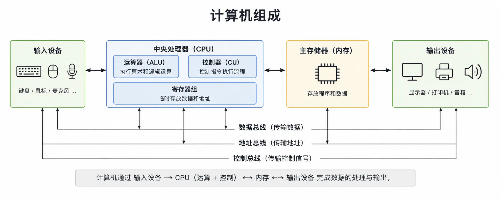
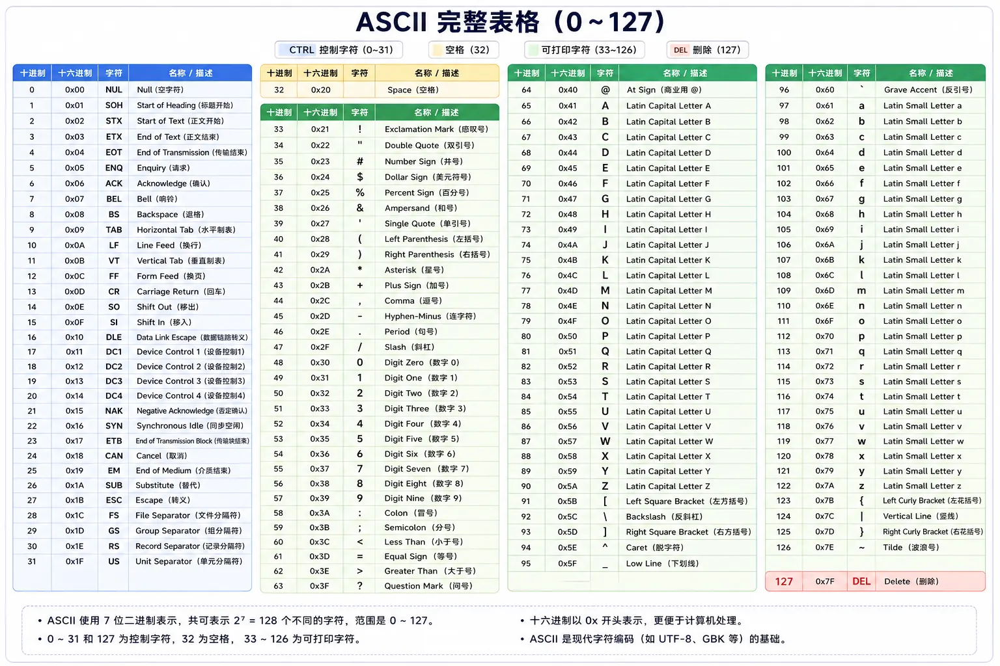
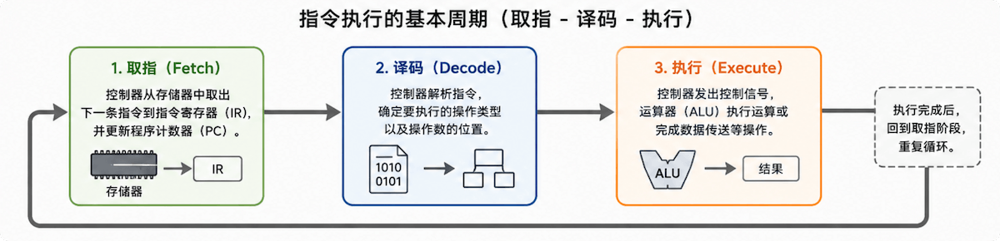

计算机组成原理（Computer Organization）是计算机科学与技术专业的核心课程之一。
计算机组成主要研究计算机系统内部各个硬件部件的组成、工作原理以及它们之间如何协同完成程序的执行。
通过学习计算机组成原理，你将理解 CPU 为什么能够执行程序、内存如何存储数据、指令如何运行，以及一台计算机从通电到运行程序的整个过程。
本教程采用大量实例和图解，帮助读者建立完整的计算机底层知识体系，为学习操作系统、编译原理、数据库、计算机网络等课程打下坚实基础。
计算机组成原理主要研究计算机硬件系统的组成结构及其工作机制，它介于数字电路和计算机体系结构之间，是理解现代计算机运行机制的重要基础。
它关注计算机各组成部件如何协同工作，包括中央处理器（CPU）、存储器、输入输出设备、总线以及控制器等核心组件。
本教程适合计算机相关专业学生以及希望深入理解计算机底层原理的开发者学习。
学习本教程前建议具备一定的计算机基础知识，这将有助于更好地理解计算机硬件系统。
一个完整的计算机系统通常由硬件系统和软件系统组成，其中硬件系统主要包括以下几个部分：
计算机系统
│
┌────────────┴────────────┐
│ │
硬件系统 软件系统
│
┌──────┼──────────────┐
│ │ │ │
CPU 存储器 输入设备 输出设备
│
├── 运算器(ALU)
├── 控制器(CU)
└── 寄存器(Register)

下面是一段简单的 C 程序，它看起来只有一行代码，但在计算机内部却经历了编译、装载、取指、译码、执行等多个过程。
程序运行过程中，大致会经历以下几个步骤：
本讲你将理解：计算机为什么选择了二进制而不是十进制，以及这一选择如何决定了现代计算机的整个架构。
想象你面前有一排电灯开关。
每个开关只有两种状态：开或关。
你不能让一个开关「半开」或「开 37%」——它是二态的，没有中间状态。
计算机内部最基本的元件——晶体管，本质上是和开关一样的东西。
它只有两种稳定状态：导通（通电）和截止（断电）。
在数字电路中，我们给这两种状态分别分配一个符号：
下面这条色带模拟了晶体管从 0V 到 3.3V 的电压范围，直观展示逻辑 0、逻辑 1 和禁止区的关系。
0.0V逻辑 0 范围：0.0V ~ 1.5V（蓝色区域） | 禁止区：1.5V ~ 1.8V（灰色区域，信号不会停留） | 逻辑 1 范围：1.8V ~ 3.3V（橙色区域）
注意：电路不需要精确测量电压值，只需要判断「高还是低」。
这比判断「是几」要容易得多。
人类使用十进制，因为我们有十根手指。
但为什么计算机不能用十进制呢？
如果要让电路表示十进制的 10 个数字（0~9），电路需要精确区分 10 个不同的电压等级。
比如：0V = 0，0.33V = 1，0.66V = 2，...，3.3V = 9。
问题来了：信号在传输过程中会有损耗和干扰。
假设你发送了 0.66V 表示数字 2，但到达目的地时电压变成了 0.71V。
接收端就会困惑：这到底是 2（0.66V）还是 3（0.99V）？
二进制只需要区分两种状态，容错空间极大。
如图：逻辑 0 的范围是 0~1.5V，逻辑 1 的范围是 1.8V~3.3V。
中间有 0.3V 的保护区。
即使信号有较大波动，只要不跨过保护区，数据就不会出错。
0 和 1 正好对应布尔代数中的「假」和「真」。
布尔代数（AND、OR、NOT 等逻辑运算）有一套完整的数学理论。
工程师可以用这套理论来设计、分析、优化电路——这是一件非常幸运的事。
计算机选择二进制不是偶然的。它是工程约束（容易实现）、物理特性（抗干扰）和数学工具（布尔代数）三者共同作用的结果。
一个二进制位称为 1 bit（比特），它只能表示 0 或 1。
显然，单个 bit 能表示的信息太少了。
于是我们把 8 个 bit 组合在一起，称为 1 byte（字节）。
一个字节能表示多少种不同的值？
每个 bit 有 2 种选择（0 或 1），8 个 bit 的组合数是：
2 x 2 x 2 x 2 x 2 x 2 x 2 x 2 = 28 = 256
即从 00000000（十进制 0）到 11111111（十进制 255），共 256 个不同的值。
| 字节数 | 可表示的数值范围 | 常见用途 |
|---|---|---|
| 1 字节 (8 bit) | 0 ~ 255 | 一个 ASCII 字符、RGB 颜色中的一个通道值 |
| 2 字节 (16 bit) | 0 ~ 65,535 | 端口号、早期 CPU 的寄存器大小 |
| 4 字节 (32 bit) | 0 ~ 4,294,967,295 | IPv4 地址、int 类型 |
| 8 字节 (64 bit) | 0 ~ 约 1.8 x 1019 | 现代 CPU 的字长、long 类型 |
下面这个交互面板让你直观感受 8 个 bit 如何组合出 0 到 255 之间的任意数值。
每个灯泡代表一个 bit。点击灯泡即可切换 0/1 状态，右侧实时显示对应的十进制数值。
点击灯泡切换状态，观察二进制如何映射到十进制。
十进制：0 二进制：00000000仔细看每个灯泡下方的权重标注。
最左边的灯泡权重最大（128），最右边的权重最小（1）。
这就是「按权展开」的思想——每个位置上的数值乘以它的权重，全部加起来就是最终结果。
Python 内置了对二进制的支持，我们可以直接用它来验证上面的灯泡演示。
理解了二进制，你就理解了一个关键事实：
计算机内部的一切——数字、文字、图片、声音、视频——最终都以 0 和 1 的形式存储和处理。
后续几讲中你会看到：
这些内容都建立在「一切皆为 0 和 1」这个基础上。
本模块全部 5 讲的最核心结论：计算机不是「理解」了信息，而是通过精巧的编码规则，把世间万物都映射成了 0 和 1 的组合。
本讲你将掌握三种进制之间的转换方法，并理解十六进制为什么是二进制的「最佳缩写」。
不同进制就像不同的「度量衡」。
人类习惯十进制，就像习惯用「米」来量身高。
计算机使用二进制，就像用「开关状态」来思考。
而十六进制，则是工程师的「速记符号」——用更短的方式表达冗长的二进制。
举个例子：「RUNOOB」这个词如果在三种「语言」中表达：
同样是一句话，二进制的表达长度是十六进制的 4 倍。
这就是我们需要学习进制转换的原因。
所有进制的原理完全相同——每个位置上的数字乘以基数的幂，然后全部加起来。
以数字 42 为例，看它在三种进制下分别如何被理解：
| 进制 | 基数 | 可用数字 | 表示 | 按权展开 |
|---|---|---|---|---|
| 十进制 | 10 | 0 ~ 9 | 42 | 4 x 101 + 2 x 100 = 42 |
| 二进制 | 2 | 0, 1 | 101010 | 1x25+0x24+1x23+0x22+1x21+0x20 = 42 |
| 十六进制 | 16 | 0~9, A~F | 2A | 2 x 161 + 10 x 160 = 42 |
关键规律：进制的「基数」决定了每一位的权重。
十进制基数 10，个位权重 100=1，十位 101=10，百位 102=100。
二进制基数 2，从右往左权重为 1, 2, 4, 8, 16, 32, 64, 128。
十六进制基数 16，从右往左权重为 1, 16, 256, 4096。
理解了「按权展开」，所有进制转换都变得简单了。你需要记住的只有一句话：每位数字 x 基数^位置编号，然后求和。
假设你要把十进制的 42 转为二进制。
方法很机械：
为什么这个方法有效？
二进制的本质是：N = d0x20 + d1x21 + d2x22 + ...
当 N 除以 2 时，余数就是 d0（最低位），商继续除 2 得到下一位。
这个逻辑和小学学过的「十进制除 10 取个位」完全一样。
从二进制转回十进制更简单——直接按权重加起来。
二进制 101010（从右往左编号位置 0~5）：
| 位置 | 5 | 4 | 3 | 2 | 1 | 0 |
|---|---|---|---|---|---|---|
| 二进制位 | 1 | 0 | 1 | 0 | 1 | 0 |
| 权重 (2^n) | 32 | 16 | 8 | 4 | 2 | 1 |
| 位 x 权重 | 1x32 | 0x16 | 1x8 | 0x4 | 1x2 | 0x1 |
1x32 + 0x16 + 1x8 + 0x4 + 1x2 + 0x1 = 42
二进制的最大问题是写起来太长。
一个 8 位的值要写 8 个数字，32 位则要写 32 个数字。
这既不便于人类阅读，也容易出错。
十六进制解决了这个问题，因为一个重要的数学巧合：
24 = 16 → 每 4 个二进制位正好对应 1 个十六进制位
| 二进制 (4位) | 十进制 | 十六进制 | 二进制 (4位) | 十进制 | 十六进制 |
|---|---|---|---|---|---|
| 0000 | 0 | 0 | 1000 | 8 | 8 |
| 0001 | 1 | 1 | 1001 | 9 | 9 |
| 0010 | 2 | 2 | 1010 | 10 | A |
| 0011 | 3 | 3 | 1011 | 11 | B |
| 0100 | 4 | 4 | 1100 | 12 | C |
| 0101 | 5 | 5 | 1101 | 13 | D |
| 0110 | 6 | 6 | 1110 | 14 | E |
| 0111 | 7 | 7 | 1111 | 15 | F |
这张表是十六进制的核心。
熟记之后，任何二进制转十六进制都是「查表取字」的机械操作。
8 位二进制分为两组，每组 4 位：
1111 = F 1111 = F → 结果：0xFF在编程中，
0x前缀表示十六进制（如0xFF），0b前缀表示二进制（如0b11111111）。这些前缀告诉编译器：这不是十进制数。
下面这个转换器让你实时观察三种进制之间的对应关系。
在任意一栏输入数值，其余两栏会自动同步更新。
注意观察二进制栏下方的色块高亮——它展示了4 位一组对应 1 位十六进制的关系。
试试看：在十进制栏输入 255，观察二进制栏的全 1 和十六进制栏的 FF。
这就是「一个字节的最大值」——理解了这个，很多概念就通了。
你已经会了两种转十进制的方法：一是按权展开（每个十六进制位 x 16 的幂），二是先转二进制再转十进制。
但还有一种更实用的方法——以二进制为「中间语言」。
任何进制转换都可以通过二进制作为桥梁：
十进制 ←→ 二进制 ←→ 十六进制因为十进制和十六进制之间的直接转换计算量较大，但各自与二进制的转换都非常简单。
十进制转二进制：除 2 取余。
十六进制转二进制：查表展开（每 1 位变 4 位）。
计算机只认识 0 和 1，那么负数是怎么表示的？
例如，十进制的 5 可以写成二进制 00000101，但 -5 应该怎么表示？
最直接的想法是拿出一位来表示正负号，但这样又会引出新的问题：负数该怎么参与加法？为什么 8 位整数的范围是 -128 到 127，而不是 -127 到 128？
要理解这些问题，就需要了解计算机表示有符号整数的三种方式：原码、反码和补码。
下面以 8 位二进制为例，通过图形和交互演示，逐步理解它们的区别。
8 位二进制共有 2^8 = 256 种不同的位模式。
如果按照无符号整数解释，可以表示 0 到 255；如果按照补码解释，可以表示 -128 到 127。
8 位二进制结构示意图（以原码为例） +5 原码 0 0000101 -5 原码 1 0000101 符号位 0：正数 符号位 1：负数 其余 7 位：绝对值注意：这里展示的是原码。补码虽然也可以通过最高位识别正负，但最高位在数值计算中具有负权重，不能简单理解为独立符号位。
原码（Sign-Magnitude）采用最高位表示符号，其余位表示绝对值。
它的问题在于有两个零：
原码中的正零和负零 +0 0 0000000 -0 1 0000000两个不同的二进制位模式表示同一个数值 0，增加了数值比较和运算的复杂度。
另外，原码不能简单地将全部二进制位直接相加来完成有符号加法。
例如，按 8 位原码直接计算 5 + (-3)，会得到 10001000，按原码解释是 -8，而正确答案应该是 2。
因此，原码运算需要额外处理操作数符号及绝对值的加减。
反码（One's Complement）的规则是：
以 -5 为例：
-5 的反码计算过程 +5 二进制 0 0000101每一位都取反：0 变成 1，1 变成 0。
-5 的反码 1 1111010 00000101 → 11111010反码依然存在两种零表示：
+0 = 00000000 -0 = 11111111
因此，反码同样无法充分利用所有位模式来表示不同的整数。
补码（Two's Complement）解决了原码和反码中正零、负零重复表示的问题。
对于负数，一个常用的补码计算方法是：
先写出绝对值的固定位宽二进制，再逐位取反，最后加 1。
因此，-5 的 8 位补码为 11111011。
符号位 + 绝对值
反码 11111010正数位模式取反
补码 11111011取反再加 1
补码的核心原理是模运算。
8 位二进制有 256 种位模式，固定宽度加法相当于对 256 取模。
例如，计算 5 - 3：
00000101
+
-3 的补码
11111101
→
结果
00000010
00000101也可以使用十进制模运算理解：
5 + (256 - 3) = 258 258 mod 256 = 2
这就是补码能够用统一的固定位宽加法机制处理减法的原因。
如果只有 4 位二进制，就有 16 种位模式。
按照补码解释，这 16 种位模式分别对应 -8 到 7。
下面的交互图可以观察数值变化时，补码如何在固定位宽的位模式中循环。
交互演示：4 位补码 选择数值： -3当前补码：1101
对应无符号值：13
从环形图可以发现：
0000 到 0111。1000 到 1111。1000，解释为 -8。1111 加 1 后，保留低 4 位得到 0。输入 -128 到 127 范围内的整数，即可查看对应的 8 位原码、反码和补码。
8 位整数编码计算器 输入整数： 原码 反码 补码特别注意：8 位原码和反码的表示范围为 -127 到 127，不能表示 -128。而 8 位补码可以表示 -128，对应位模式为 10000000。
在 8 位补码中，可以将每一位理解为具有不同的数值权重。
与无符号整数不同，补码最高位的权重是 -128，而不是 +128。
8 位补码的位权重| 位位置 | 7 | 6 | 5 | 4 | 3 | 2 | 1 | 0 |
|---|---|---|---|---|---|---|---|---|
| 位权重 | -128 | 64 | 32 | 16 | 8 | 4 | 2 | 1 |
| -1 的位 | 1 | 1 | 1 | 1 | 1 | 1 | 1 | 1 |
因此，补码中的最高位并不只是一个独立的正负标志，它也参与整个数值的计算。
| 数值 | 原码 | 反码 | 补码 |
|---|---|---|---|
| +5 | 00000101 | 00000101 | 00000101 |
| -5 | 10000101 | 11111010 | 11111011 |
| +0 | 00000000 | 00000000 | 00000000 |
| -0 | 10000000 | 11111111 | 不存在独立表示 |
| +127 | 01111111 | 01111111 | 01111111 |
| -127 | 11111111 | 10000000 | 10000001 |
| -128 | 无法表示 | 无法表示 | 10000000 |
8 位补码的表示范围为 -128 到 127。如果真实数学结果超出这个范围，就会发生有符号溢出。
8 位模运算：127 + 1 127 01111111 +1 00000001 低 8 位结果 10000000数学结果为 128，超出 8 位补码的最大值 127。保留低 8 位后得到 10000000，按照 8 位补码解释为 -128。
需要注意，这只是固定 8 位、按模 256 截断的运算结果。
byte 参与算术运算时通常先提升为 int。Python 可以通过位运算模拟指定位宽的补码。
执行结果：
5 -> 00000101 -> 5 -5 -> 11111011 -> -5 -20 -> 11101100 -> -20 0 -> 00000000 -> 0 127 -> 01111111 -> 127 -128 -> 10000000 -> -128
因为在固定 n 位补码中，0 的位模式只有全零这一种。对零取反加 1，按固定宽度截断后仍然得到全零。
在 8 位补码中，-128 的位模式为 10000000。逐位取反加 1 后，保留低 8 位仍是 10000000。
原因是 +128 超出 8 位补码的表示范围，因此最小负数没有可表示的正数相反数。
不是。二进制是使用 0 和 1 表示数据的计数和编码基础；补码则是一种解释固定位宽二进制位模式的有符号整数编码方式。
原码、反码和补码都是有符号整数的编码方式。
原码比较直观，但存在正零、负零和符号运算复杂的问题；反码通过逐位取反表示负数，但仍然存在两个零；补码则只保留一种零表示，并允许利用模运算统一处理固定宽度的加减法。
理解补码时，最值得记住的是：
2^n 运算。本讲你将理解：小数如何在只有 0 和 1 的世界里表示，以及为什么浮点数会有精度误差。
你在物理课上一定见过科学计数法：
光速 = 3.0 x 108 m/s，电子质量 = 9.1 x 10-31 kg。
这种方式用很少的数字就能表示非常大或非常小的数。
计算机表示小数用的也是完全相同的思路——二进制科学计数法。
任何二进制小数都可以写成：
1.xxxxxxxxxx x 2yyyyy
这个形式只需要存储三样东西：
IEEE 754 标准就是把这三样东西按固定格式塞进 32 个 bit 里。
32 位（单精度 float）被精确地划分为三段：
0 00000000 00000000000000000000000 符号位 (1 bit) 指数位 (8 bits) 尾数位 (23 bits)最简单的一段。
0 表示正数，1 表示负数。
指数决定小数点的位置（这就是「浮点」名字的由来——小数点可以「浮动」）。
但指数不是直接存的，而是存储「实际指数 + 127」。
这个 127 叫做偏移量（Bias）。
为什么要加偏移量？
因为 8 位只能表示 0~255（无符号），但实际指数需要是负数（表示小于 1 的数）。
加偏移量 127 后：
尾数存储的是「1.xxxxx」中的「xxxxx」部分，省略了前导的 1。
因为二进制科学计数法中，归一化后的形式总是 1.xxx，所以前面的 1 不需要存储。
这巧妙地多节省了 1 bit 的精度。
理解三段结构的关键：浮点数 = (-1)^符号 x 1.尾数 x 2(指数-127)。这就是 IEEE 754 的全部精髓。
输入一个浮点数，观察它在 IEEE 754 单精度格式下的三段结构。
分段横条会高亮显示三段分别对应哪些 bit。
试试输入 0.1，观察尾数部分。
0.1 的二进制尾数是一个无限循环小数——23 位完全不够存储。
这就引出了一个著名的计算机现象。
如果你在 Python 或 JavaScript 中运行 0.1 + 0.2 == 0.3，结果是 False。
这不是 bug，而是浮点数表示法的必然结果。
原因很简单：0.1 无法用二进制精确表示。
就像十进制中，1/3 = 0.33333... 是一个无限循环小数。
二进制中，0.1 (十进制) = 0.000110011001100110011... (二进制)，也是一个无限循环小数。
IEEE 754 只有 23 位尾数来存储这个无限循环小数。
超出 23 位的部分只能被截断（舍入），这就产生了舍入误差。
0.1 在 float32 中实际存储的值大约是 0.100000001490116119384765625。
0.2 在 float32 中实际存储的值大约是 0.20000000298023223876953125。
两者相加再截断后，结果不等于精确的 0.3。
金额计算必须避免浮点数
在涉及金额的场景，应该使用整数（以「分」为单位）或专门的 Decimal 类型。
Python 的 Decimal、Java 的 BigDecimal、C# 的 decimal 都是为此设计的。
用浮点数存储金额，等你发现 0.01 的累积误差变成 0.010000000000000002 时，问题已经种下很久了。
IEEE 754 为指数和尾数保留了几个特殊组合：
| 类别 | 符号位 | 指数 (存储) | 尾数 | 含义 |
|---|---|---|---|---|
| 零 | 0 或 1 | 0 (全 0) | 全 0 | +0 或 -0 |
| 非归一化数 | 0 或 1 | 0 (全 0) | 非全 0 | 非常接近 0 的值 |
| 归一化数 | 0 或 1 | 1 ~ 254 | 任意 | 正常的浮点数 |
| 无穷大 | 0 或 1 | 255 (全 1) | 全 0 | +Infinity 或 -Infinity |
| NaN | 任意 | 255 (全 1) | 非全 0 | 非数值（如 0/0） |
单精度 float (32 位) 的近似范围：
双精度 double (64 位) 的范围更大、精度更高：
如前面 0.1 的例子。
任何在十进制中是「干净」的小数，在二进制中都可能是无限循环的。
只有分母是 2 的幂的分数（如 0.5、0.25、0.125）才能在二进制中精确表示。
浮点数的精度不是均匀分布的——数值越大，能区分的最小差值越大。
比如 16777216.0 + 1.0 = 16777216.0（在 float32 中结果不变）。
因为 32 位浮点数只能精确表示约 7 位有效数字，16777216 本身已经占了 8 位。
加 1 产生的变化落入了尾数无法表示的精度范围，直接被「吞掉」了。
两个非常接近的浮点数相减，会导致有效数字的灾难性丢失。
比如 1.2345678 - 1.2345677 = 0.0000001，但实际计算可能得到 0.000000099999... 这样误差很大的结果。
了解浮点数的精度限制不是让你「害怕」用它，而是让你在合适的场景选择合适的工具。科学计算、图形渲染、机器学习——浮点数在这些领域完全够用。但金融、会计、精确计数——请远离浮点数。
| 场景 | 推荐类型 | 原因 |
|---|---|---|
| 科学计算、图形渲染 | float 或 double | 精度足够，硬件加速支持好 |
| 金融金额计算 | Decimal / BigDecimal | 精确十进制运算，无舍入误差 |
| 计数器、索引 | int / long | 精确整数，没有精度问题 |
| 比较浮点数 | 用容差比较 | 不应直接 ==，应用 abs(a-b) < epsilon |
| 货币存储/传输 | 整数（以分为单位） | 避免序列化时的浮点误差 |
本讲你将理解：文字如何在只能存储数字的计算机中表示，以及为什么有时打开一个文件会出现乱码。
想象一栋有 128 个房间的大楼。
前台不会用「总统套房」「花园房」这样的名称来管理房间。
他们给每个房间分配一个编号：101, 102, 103...
查编号 101 就知道：哦，那是标准大床房。
计算机处理文字用了完全相同的思路：
给每个字符分配一个数字编号，然后存储和处理这个数字。
这个「编号方案」就是字符编码。
ASCII（American Standard Code for Information Interchange，美国信息交换标准代码）诞生于 1963 年。
它用 7 个 bit 来表示一个字符，总共能表示 2^7 = 128 个字符。
包含：

| 字符类别 | ASCII 范围 | 特征 |
|---|---|---|
| '0' ~ '9' | 48 ~ 57 (0x30 ~ 0x39) | 数字 0 的编码是 48，不是 0 |
| 'A' ~ 'Z' | 65 ~ 90 (0x41 ~ 0x5A) | 大写字母连续排列 |
| 'a' ~ 'z' | 97 ~ 122 (0x61 ~ 0x7A) | 小写字母连续排列 |
| 换行 '\n' | 10 (0x0A) | LF，Unix/Mac 换行 |
| 回车 '\r' | 13 (0x0D) | CR，老式 Mac 换行 |
注意大写 'A' (65) 和小写 'a' (97) 的二进制表示：
'A' = 01000001这不是巧合。
在二进制层面，把第 5 位从 0 改成 1，就直接完成了大写转小写。
这个精妙的设计让早期的电传打字机只需要一个简单的电路就能切换大小写模式。
第 5 位是按 从右往左、从 0 开始编号 的比特位来算的（即 LSB 为第 0 位），这是计算机里最常见的位编号方式：
大小写字母差 32，所以在 ASCII 层面，
'a' - 'A' = 32，'A' | 0x20 = 'a'（位运算切换大小写）。这一切都源于 ASCII 编码表的精妙布局。
ASCII 只有 128 个字符，这对英文来说足够了。
但计算机传到欧洲后，问题来了：
法文有 e、德文有 u、西班牙文有 n——这些带重音符号的字母，ASCII 里根本没有。
于是每个国家开始「打补丁」——用 ASCII 没用到的 128~255 区域（第 8 位设为 1）：
这成了一个灾难——同一段二进制数据，在不同编码下解读出的文字完全不同。
你打开一个日文文档看到乱码？那就是编码不匹配的经典症状。
Unicode 的目标很简单也很宏大：
给世界上每一个字符分配一个唯一的数字编号（码点，Code Point）。
Unicode 不是 16 位的——它的码点范围是 U+0000 到 U+10FFFF，可以容纳超过 100 万个字符。
目前已经分配了约 15 万个字符，覆盖了几乎所有的人类书写系统，以及 emoji。
| 字符 | Unicode 码点 | 含义 | 所属区块 |
|---|---|---|---|
| A | U+0041 | 拉丁大写字母 A | 基本拉丁字母（兼容 ASCII） |
| 你 | U+4F60 | CJK 汉字「你」 | CJK 统一表意文字 |
| 好 | U+597D | CJK 汉字「好」 | CJK 统一表意文字 |
| hello | U+68D2 | 阿拉伯语「你好」 | 阿拉伯文 |
| runoob | U+E0001 | 语言标记 | Tags 区块 |
注意：Unicode 只是「编号方案」——告诉你「字符 X 的编号是 U+XXXX」。
它不规定「编号 U+XXXX 在文件中怎么存」。
存文件是 UTF-8、UTF-16 这些「编码方案」的事。
很多人把 Unicode 和 UTF-8 混为一谈。记住这个区分：Unicode 是词典（定义哪个字对应哪个编号），UTF-8 是书写规则（规定编号怎么写成字节序列）。
UTF-8 的设计极其巧妙。它是一种变长编码：
第一个字节的前导位模式告诉解码器：这个字符用几个字节存储。
UTF-8 的最大优势：完全兼容 ASCII。
任何合法的 ASCII 文本，同时也是合法的 UTF-8 文本。
这一特性让 UTF-8 可以平滑地替换掉旧的 ASCII 系统，而不破坏任何现有数据。
在下方输入任意文字，查看每个字符的 Unicode 码点、UTF-8 编码字节、以及占用空间。
快速填入： 中英混合 大写A 小写a 数字 全英文 全中文 大小写对比操作建议：
Hello RUNOOB，注意看每个字母的 ASCII 编码是否连续排列。乱码的本质只有一句话：用错了字典去解读数据。
假设一个文件里存了 UTF-8 编码的三个字节：E4 BD A0
同一段二进制，三种字典读出了三种不同的文字。
<meta charset="UTF-8">，HTTP 响应头中写 Content-Type: text/html; charset=utf-8UTF-8 虽然不需要考虑字节序（因为它以字节为单位），但有些 Windows 程序会在 UTF-8 文件开头加上 BOM：EF BB BF。
这三个字节是用来标记「这个文件是 UTF-8 编码」的。
但在 Unix/Linux 系统上，BOM 可能导致各种问题：
#!/bin/bash 前面多了三个不可见字节，导致脚本无法执行建议：UTF-8 文件使用「无 BOM」格式（UTF-8 without BOM），这也是大多数现代编辑器的默认设置。
截至今天，UTF-8 已经成为互联网的事实标准。
超过 98% 的网页使用 UTF-8 编码。
JSON 规范要求 UTF-8。
几乎所有现代编程语言默认使用 UTF-8 处理文本。
Unicode 仍在扩展。
新版本的 Unicode 每年增加新的字符，包括：罕见文字、历史文字、新的 emoji。
编码从「能不能表示」的问题，变成了「如何高效存储和传输」的问题。
如果你今天新建一个项目，选择 UTF-8 不会出错。它是向后兼容 ASCII 的、跨平台的、支持全语言的编码方案。唯一需要注意的是——确保你的全栈（前端、后端、数据库）都使用 UTF-8，不要混用。
布尔代数是所有数字电路的数学基础，四种基本逻辑运算的组合可以构建任意复杂电路。
在进入一栋高度安全的建筑时，你会遇到各种门禁规则。这些规则恰好对应了布尔代数的基本运算，让我们用生活场景来理解它们。
AND 与门——两道门同时打开才能进入：某金库需要两把钥匙同时转动才能开门。两把钥匙都插入并旋转（输入都为 1），门才会打开（输出为 1）。任意一把钥匙缺失，门都纹丝不动。
OR 或门——任意一扇门开着就能进入：办公楼有两个入口，前门或后门只要有一个开着，你就可以进去。任何一个入口开放（至少一个输入为 1），你就能通过（输出为 1）。
NOT 非门——按钮翻转指示牌：卫生间门口有一个"空闲/使用中"的翻转指示牌，按一下按钮就会翻转当前状态。输入为 0（空闲）则输出 1（使用中），反之亦然。
XOR 异或门——房间两盏灯必须一开一关：某个房间安装了两盏灯，规则是两盏灯的状态必须相反（一开一关），否则报警系统触发。因此两个输入不同时输出为 1，相同时输出为 0。
布尔代数由英国数学家 乔治·布尔（George Boole）于 1854 年在著作《思维定律的研究》中首次系统提出。布尔的目标是将人类逻辑推理数学化，他创造了一套用代数符号表达"真"与"假"的方法。
1938 年，克劳德·香农（Claude Shannon）在其 MIT 硕士论文中证明：布尔代数可以用来描述和简化继电器开关电路。这篇被称为"史上最重要的硕士论文"的工作，奠定了整个数字电路设计的理论基础。
可以说，没有布尔代数就没有数字电路，没有数字电路就没有现代计算机。你正在阅读这段话的设备内部，每秒钟正进行着数以亿计的布尔运算。
AND 运算的规则只有一句话：只有当所有输入都为 1 时，输出才为 1；否则输出为 0。你可以把它理解为串联开关——两个开关必须都闭合，灯泡才会亮。
| A | B | A AND B |
|---|---|---|
| 0 | 0 | 0 |
| 0 | 1 | 0 |
| 1 | 0 | 0 |
| 1 | 1 | 1 |
逻辑表达式：Y = A · B（有时省略点号，直接写作 Y = AB）。口诀：全 1 才 1。
OR 运算的规则：只要有一个输入为 1，输出就为 1；只有全部输入为 0 时，输出才为 0。类比并联开关——任意一个开关闭合，灯泡就亮。
| A | B | A OR B |
|---|---|---|
| 0 | 0 | 0 |
| 0 | 1 | 1 |
| 1 | 0 | 1 |
| 1 | 1 | 1 |
逻辑表达式：Y = A + B（注意这不是算术加法，1+1 在布尔代数中仍等于 1）。口诀：有 1 就 1。
NOT 是唯一只接受一个输入的基本运算，规则最为简单：输出与输入相反。输入 1 则输出 0，输入 0 则输出 1。
| A | NOT A |
|---|---|
| 0 | 1 |
| 1 | 0 |
逻辑表达式：Y = A' 或 Y = NOT A。在电路图中常用输入线上的小圆圈表示取反。口诀：0 变 1，1 变 0。
XOR 的规则：两个输入不同时输出为 1，相同时输出为 0。XOR 可以由 AND、OR、NOT 组合实现：A XOR B = (A' · B) + (A · B')。
| A | B | A XOR B |
|---|---|---|
| 0 | 0 | 0 |
| 0 | 1 | 1 |
| 1 | 0 | 1 |
| 1 | 1 | 0 |
逻辑表达式：Y = A XOR B。XOR 在加法器设计、奇偶校验、数据加密等领域有大量应用。口诀：不同为 1。
在数字电路图中，每种基本逻辑运算都有对应的标准逻辑门符号：
AND 门：符号为 D 形——一条直线边加一个半圆弧，两条输入线在左侧，一条输出线在右侧。
OR 门：符号为盾形——弧线内收的曲线，后端汇聚为尖点，表示"或"的逻辑含义。
NOT 门（反相器）：三角形后接一个小圆圈——三角形表示缓冲/驱动，圆圈表示信号取反。
XOR 门：与 OR 门形状相似，但在输入端的弧线前多加一条弧线，用以区分"异或"。
任何复杂的数字电路——包括 CPU 内部的运算器、控制器——最终都可以分解为这四种基本逻辑门的组合。这便是布尔代数作为数字电路理论基础的根本原因。
以下是四种基本逻辑门的标准符号展示，以及一个可交互的真值表——点击 A、B 按钮切换输入，观察对应行的输出变化。
点击下方 A、B 按钮在 0/1 之间切换，观察表格中对应输入行被高亮
输入 A 0 输入 B 0 当前选中：A=0, B=0| A | B | AND | OR | NOT A | NOT B | XOR |
|---|---|---|---|---|---|---|
| 0 | 0 | 0 | 0 | 1 | 1 | 0 |
| 0 | 1 | 0 | 1 | 1 | 0 | 1 |
| 1 | 0 | 0 | 1 | 0 | 1 | 1 |
| 1 | 1 | 1 | 1 | 0 | 0 | 0 |
点击下方按钮切换输入 A 和 B 的值（0 或 1），观察各逻辑门的输出如何实时变化：
点击下方按钮切换输入 A 和 B 的值
输入 A 输入 B| 逻辑门 | 逻辑表达式 | 当前输出 | 口诀 |
|---|---|---|---|
| AND 与门 | A AND B | - | 全 1 才 1 |
| OR 或门 | A OR B | - | 有 1 就 1 |
| NOT 非门 | NOT A | - | 0 变 1，1 变 0 |
| NOT 非门 | NOT B | - | 0 变 1，1 变 0 |
| XOR 异或门 | A XOR B | - | 不同为 1 |
下面用 Python 实现四种基本逻辑运算的函数，并自动生成完整的真值表，同时验证德摩根定律：
上一讲我们认识了四种基本逻辑门。这一讲，我们把它们连接起来，搭出能解决实际问题的电路。
单个逻辑门就像一颗螺丝钉——本身功能有限。但把它们组合起来，就能构建出任意复杂的功能。
想象你面前有四种颜色的乐高积木：
用这几块积木，你可以搭出什么？
一个投票器：三个人投票，少数服从多数。这是一个典型的组合逻辑电路——把 AND/OR 门连起来就能实现。
一个密码锁：需要同时按下正确的几个键才能开锁。这本质上是 AND 门的级联——每个键对应一个输入，只有所有输入都为 1 时才输出 1。
一个报警器：任意一个传感器触发就报警。这本质上是 OR 门的应用——只要有一个传感器输出 1，报警器就响。
在深入电路搭建之前，先区分两个重要概念：
| 类型 | 特点 | 输出取决于 | 有记忆吗？ | 例子 |
|---|---|---|---|---|
| 组合逻辑 | 输出仅由当前输入决定 | 当前输入值 | 没有 | 加法器、多数表决器、译码器 |
| 时序逻辑 | 输出由当前输入 + 历史状态决定 | 当前输入 + 之前存的值 | 有 | 计数器、寄存器、状态机 |
本讲关注组合逻辑。时序逻辑将在第 9 讲详细介绍。
简单区分方法：组合逻辑是「你输入什么，我就输出什么」（像数学函数）；时序逻辑是「我还记得你之前输入过什么」（像人的记忆）。
用逻辑门搭建任意组合逻辑电路，有一个通用的三步流程：
下面我们通过三个由浅入深的例子来实践这个方法。
需求：设计一个简单的密码检查电路。有两个输入 A 和 B，只有当 A=1 且 B=1 时输出 1（解锁），其他情况输出 0（锁定）。
这个需求其实就是一个 AND 门。但我们可以用它来演示三步法：
| A | B | 期望输出 Y |
|---|---|---|
| 0 | 0 | 0（锁） |
| 0 | 1 | 0（锁） |
| 1 | 0 | 0（锁） |
| 1 | 1 | 1（解锁） |
只有最后一行输出为 1。对应的与项是：A AND B。
所以：Y = A AND B
只需要一个 AND 门，A 和 B 作为输入，输出就是 Y。
太简单了？下面来看一个有实际意义的例子。
需求：三个人（A、B、C）对提案进行投票表决（1 表示赞成，0 表示反对）。当至少两人赞成时，提案通过（输出 1）。
这是一个经典的三输入多数表决器，也是数字电路教材中的必学案例。
三输入共有 23 = 8 种组合：
| A | B | C | 赞成人数 | 是否通过 Y | 说明 |
|---|---|---|---|---|---|
| 0 | 0 | 0 | 0 | 0 | 无人赞成 |
| 0 | 0 | 1 | 1 | 0 | 仅 C 赞成 |
| 0 | 1 | 0 | 1 | 0 | 仅 B 赞成 |
| 0 | 1 | 1 | 2 | 1 | B 和 C 赞成 |
| 1 | 0 | 0 | 1 | 0 | 仅 A 赞成 |
| 1 | 0 | 1 | 2 | 1 | A 和 C 赞成 |
| 1 | 1 | 0 | 2 | 1 | A 和 B 赞成 |
| 1 | 1 | 1 | 3 | 1 | 全票通过 |
找出输出为 1 的行（第 4、6、7、8 行），每行写一个与项：
用 OR 连接：Y = (NOT(A) AND B AND C) OR (A AND NOT(B) AND C) OR (A AND B AND NOT(C)) OR (A AND B AND C)
这个表达式虽然看起来有点长，但逻辑上非常清晰：Y 为 1 当且仅当任意两个或三个输入为 1。
三个 AND 门分别检测「AB」、「BC」、「AC」三对组合是否为 11，然后 OR 门汇总结果。
注意真值表到逻辑表达式的转换过程。这是数字电路设计中最核心的技能之一：看到真值表，就能写出表达式；看到表达式，就能画出电路图。三者一一对应。
需求：比较两个 1 位二进制数 A 和 B。输出三个信号：A>B、A=B、A
这是一个非常重要的基础电路——多位比较器和 CPU 中的条件判断，都是从这里扩展出去的。
| A | B | A > B | A = B | A < B |
|---|---|---|---|---|
| 0 | 0 | 0 | 1 | 0 |
| 0 | 1 | 0 | 0 | 1 |
| 1 | 0 | 1 | 0 | 0 |
| 1 | 1 | 0 | 1 | 0 |
观察真值表：
注意 A = B 的检测，和 XOR 门关系密切。XOR 输出为 1 意味着「不同」，对其取 NOT 就得到了「相等」。
需求：输入 2 位二进制数（00、01、10、11），让对应的 4 条输出线中的一条为 1，其余为 0。
译码器是 CPU 中的核心部件——当 CPU 要选择某个寄存器时，实质上就是在用译码器。
| A1 | A0 | Y0 | Y1 | Y2 | Y3 |
|---|---|---|---|---|---|
| 0 | 0 | 1 | 0 | 0 | 0 |
| 0 | 1 | 0 | 1 | 0 | 0 |
| 1 | 0 | 0 | 0 | 1 | 0 |
| 1 | 1 | 0 | 0 | 0 | 1 |
译码器是「一选多」的经典电路。与之相对的是多路选择器（MUX），它是「多选一」。这两者在 CPU 的数据通路设计中非常常见。译码器用于「选中某个目标」（如选择写哪个寄存器），多路选择器用于「选中某个来源」（如选择 ALU 从哪个寄存器读数据）。
实际芯片制造中，NAND 和 NOR 门比 AND 和 OR 门更「底层」。
NAND 门 = AND + NOT，即先做 AND 再取反。NAND 和 NOR 被称为「通用门」（Universal Gates），因为它们各自单独就能实现所有布尔函数。
为什么芯片偏爱 NAND/NOR？因为在 CMOS 工艺中：
下面验证 NAND 门的「通用性」：
nand2tetris（从与非门到俄罗斯方块）是一个著名的计算机课程。它挑战你只用 NAND 门这一种元件，逐步搭建出 CPU、内存、操作系统，最终运行一个俄罗斯方块游戏。如果你对计算机底层感兴趣，强烈推荐。
下方使用 vis-network 可视化了一个三输入多数表决器电路（Y = AB + BC + AC）。点击输入节点 A、B、C 切换 0/1，电路会自动求值并更新所有连线颜色——红色表示信号为 1，灰色表示信号为 0。
计算机不会「算数」——它只会用逻辑门一层层搭积木。这一讲我们亲手用 XOR、AND、OR 门搭建出一个能算加法的电路，从半加器到全加器再到 4 位加法器，逐级构建。
回想你在纸上做加法的过程。计算 37 + 58：
先算个位：7 + 8 = 15，写 5，进 1。
再算十位：3 + 5 + 进位1 = 9，写 9，结果是 95。
这个过程揭示了三个关键点：
1. 逐位计算：每一位只关心自己的两个加数和来自低位的进位。
2. 进位传播：低位算完可能产生进位，这个进位要传给高位。
3. 最低位特殊：最低位没有来自更低位的进位，只需要处理两个加数。
计算机做加法也是这个思路：把一个大问题（多位加法）拆成许多小问题（1位加法），然后逐个击破。
最低位没有进位输入，只需要把两个 1 位二进制数相加。能处理这种情况的电路叫半加器（Half Adder）。
半加器有两个输入 A 和 B，两个输出：和位 Sum 和 进位 Carry。
半加器真值表：
| A | B | Sum（和） | Carry（进位） |
|---|---|---|---|
| 0 | 0 | 0 | 0 |
| 0 | 1 | 1 | 0 |
| 1 | 0 | 1 | 0 |
| 1 | 1 | 0 | 1 |
观察真值表，一个惊人的巧合出现了：
Sum = A XOR B。当 A 和 B 不同时 Sum=1，相同时 Sum=0——这正是异或门的真值表。
Carry = A AND B。只有两个输入都是 1 时才产生进位——这正是与门的真值表。
半加器只需要 1 个 XOR 门 + 1 个 AND 门就能实现。乔治·布尔恐怕自己都没想到，他发明的代数系统有一天会成为加法器的数学基础。
半加器有一个致命缺陷：它不能接收来自低位的进位。除最低位外，每一位都要处理三个数：A、B、来自低位的进位 Cin。
能同时处理两个加数和一个进位输入的电路叫全加器（Full Adder）。
全加器真值表：
| A | B | Cin | Sum | Cout |
|---|---|---|---|---|
| 0 | 0 | 0 | 0 | 0 |
| 0 | 0 | 1 | 1 | 0 |
| 0 | 1 | 0 | 1 | 0 |
| 0 | 1 | 1 | 0 | 1 |
| 1 | 0 | 0 | 1 | 0 |
| 1 | 0 | 1 | 0 | 1 |
| 1 | 1 | 0 | 0 | 1 |
| 1 | 1 | 1 | 1 | 1 |
一个巧妙的设计：用两个半加器就能搭出全加器。
第一步：半加器 1 处理 A 和 B，得到中间和 S1 和进位 C1。
第二步：半加器 2 处理 S1 和 Cin，得到最终和 Sum 和进位 C2。
第三步：最终进位 Cout = C1 OR C2（任意一个半加器产生进位，最终就输出进位）。
全加器的电路结构：2 个半加器 + 1 个 OR 门。层层叠加，每个半加器内部又是 XOR + AND。这种分层构建的思想贯穿整个计算机体系结构。
有了全加器，多位加法就简单了：把多个全加器串起来，低位的进位输出连到高位的进位输入。
一个 4 位加法器的级联结构：
第 0 位（最低位）：全加器处理 A0、B0，进位入 = 0，产生和 S0 和进位 C0。
第 1 位：全加器处理 A1、B1，进位入 = C0，产生和 S1 和进位 C1。
第 2 位：全加器处理 A2、B2，进位入 = C1，产生和 S2 和进位 C2。
第 3 位（最高位）：全加器处理 A3、B3，进位入 = C2，产生和 S3 和进位 C3（最终进位）。
进位像水波一样从低位逐级「荡漾」到高位，因此这种结构叫行波进位加法器（Ripple Carry Adder）。
行波进位加法器简单直观，但有一个性能瓶颈：最坏情况下，进位需要从第 0 位一直传到最高位，经过 N 级全加器的延迟。现代 CPU 使用超前进位（Carry Lookahead）等技术优化，但理解行波进位是理解一切加法器优化的前提。
运行代码，观察进位如何在每一位之间传播——最低位先算，产生进位后传给下一位，下一位再算，产生进位再往后传。这就是「行波进位」名称的由来。
下方用纯 div+SVG 模拟了一个 4 位行波进位加法器。点击按钮逐步演示进位如何从第 0 位（最低位）传到第 3 位（最高位），也可以用「自动演示」观看完整过程。
从组合逻辑到时序逻辑，理解 D 触发器和寄存器的工作原理
想象你手中有一台相机。在按下快门之前，外面的世界千变万化——行人走动、树叶摇晃、光线明暗交替。
但当你按下快门的那个瞬间（时钟上升沿），当前画面被「锁存」到照片中。
之后无论外面的世界如何变化，照片里的内容永远定格在了那个瞬间。这就是 D 触发器的核心行为——在时钟信号的上升沿，捕捉并保存数据。
此前几讲我们学习的与门、或门、非门等电路，都属于组合逻辑。它们的输出仅由当前的输入决定——输入变了，输出立刻跟着变（忽略传播延迟）。
但计算机要能「记住」数据，就需要一种能在输入消失后依然保持输出的电路。这就是时序逻辑。
组合逻辑像一盏灯——开关按下就亮，松手就灭，输出完全依赖当前输入。
时序逻辑像一个保险箱——你把东西放进去锁好（时钟上升沿到达），之后即使你走开（输入消失），里面的东西依然在。
| 对比维度 | 组合逻辑 | 时序逻辑 |
|---|---|---|
| 输出依赖 | 仅取决于当前输入 | 取决于当前输入和之前的状态 |
| 记忆能力 | 无（无状态） | 有（能记住历史） |
| 典型电路 | 与门、或门、非门、加法器 | D 触发器、寄存器、计数器 |
| 时钟依赖 | 不依赖时钟 | 依赖时钟信号同步状态更新 |
| 反馈回路 | 无反馈（无环） | 有反馈回路来保持状态 |
D 触发器（D Flip-Flop）是最基本的时序逻辑单元。它有两个输入和一个输出：
D（Data）：数据输入端，表示要存储的值（0 或 1）。
CLK（Clock）：时钟输入端，控制何时锁存数据。
Q：数据输出端，输出当前存储的值。
关键行为：D 触发器只在时钟信号的上升沿（从 0 跳变到 1 的瞬间）将 D 的值锁存到 Q。其他时间，无论 D 怎么变，Q 都保持不变。
这就像相机只在按下快门的瞬间记录画面，其他时间外面的画面怎么变都影响不到照片。
如果没有时钟信号，D 触发器的输出会随着输入不断变化，变成又一个组合逻辑电路。「记忆」就无从谈起。
时钟信号提供了一个同步节拍，让所有触发器在统一的时间点更新状态。整个计算机系统就是在这个节拍下协调工作的。
一个 D 触发器只能存储 1 位（bit）数据。要存储一个字节（8 位）或一个字（32 位），就需要多个触发器并联在一起。
把 N 个 D 触发器并联，让它们共享同一个时钟信号，就构成了一个 N 位寄存器（Register）。
当时钟上升沿到来时，所有触发器同时锁存各自 D 端的值，这样就一次性保存了完整的 N 位数据。
在 CPU 内部，寄存器的输出常常连接到下一级组合逻辑，再连接到下一级寄存器——形成寄存器-组合逻辑-寄存器的流水线结构。
每个时钟周期，数据从一级寄存器经组合逻辑计算后，在下一个上升沿存入下一级寄存器。这就是现代 CPU 流水线的基础。
下面用 Python 代码模拟 D 触发器和 4 位寄存器的行为。重点关注上升沿检测的逻辑：当检测到 clk 从 0 跳变到 1 时，才捕获数据。
下方用 Chart.js 的 stepped:true 选项绘制了时钟信号（方波）和数据信号的时序图。红色竖线标注了每个时钟上升沿（CLK 从 0 跳变到 1 的时刻），这些时刻正是 D 触发器锁存数据的关键瞬间。
1945 年，数学家冯·诺依曼（John von Neumann）提出了一个影响至今的计算机架构蓝图。
这份蓝图的核心理念极其简洁，却奠定了过去八十年所有通用计算机的根基。
想象你走进一座大型图书馆，想快速找到一本书并把它寄送给远方的朋友。
你得经过以下几个步骤：
第一步，输入需求——你在图书馆的电脑终端上输入书名。
第二步，查找位置——系统根据书名查询数据库，找到这本书在哪个书架。
第三步，取出书本——机械臂从书架上取下那本书。
第四步，打包输出——把书包好，贴上快递单，送到邮局。
第五步，协调指挥——这一切都需要一个中央调度系统来协调顺序和节奏。
这套系统如果换成计算机术语，就对应着冯·诺依曼架构的五大组成部分：
| 图书馆类比 | 计算机组件 | 做了什么 |
|---|---|---|
| 查询终端 | 输入设备 (Input) | 把外部信息送入计算机 |
| 书架上的书 | 存储器 (Memory) | 存放程序和数据的仓库 |
| 机械臂 | 运算器 (ALU) | 执行算术和逻辑运算 |
| 包裹投递 | 输出设备 (Output) | 把结果送出计算机 |
| 中央调度系统 | 控制器 (Control Unit) | 指挥各部件协调工作 |
你发现了吗？图书馆的这个系统能正常工作，关键不在于每一个部件本身，而在于它们之间有一套清晰的数据流动规则。
同样，冯·诺依曼架构的精髓也在于「各部件如何连接和通信」。
冯·诺依曼架构将一台计算机划分为五个功能独立但又密切协作的部分：
| 组件 | 英文 | 通俗理解 | 核心功能 |
|---|---|---|---|
| 运算器 | ALU (Arithmetic Logic Unit) | 计算机的「算盘」 | 执行加减乘除、与或非等算术和逻辑运算 |
| 控制器 | Control Unit | 计算机的「指挥中心」 | 从内存取指令、解析指令、发出控制信号指挥其他部件 |
| 存储器 | Memory | 计算机的「仓库」 | 存放程序指令和运算数据，按地址读写 |
| 输入设备 | Input Devices | 计算机的「耳目」 | 将外部信息（按键、鼠标点击、传感器数据）送入计算机 |
| 输出设备 | Output Devices | 计算机的「口和手」 | 将计算结果以人能感知的形式送出（显示、打印、声音） |
运算器和控制器合在一起，就是我们常说的 CPU（中央处理器）。它们是计算机的「大脑」，而存储器和输入输出设备则是「神经系统」和「感官」。
下面的架构图用五种颜色的矩形表示五大组件，带箭头的连线标注了数据流动的方向。
数据总线 地址总线 控制总线 数据写入下图展示了现代计算机最经典的冯·诺依曼体系结构。整个系统由 CPU、存储器（Memory）、输入设备（Input）、输出设备（Output）以及 I/O 接口 五部分组成，其中 CPU 内部又包含 控制器（Control Unit）、运算器（ALU）和寄存器组（Registers）。
CPU 通过 数据总线（Data Bus）、地址总线（Address Bus） 和 控制总线（Control Bus） 与存储器及 I/O 设备进行通信：地址总线负责指定访问位置，数据总线负责传输指令和数据，控制总线负责发送读写、中断等控制信号，三者共同完成计算机内部的信息交换。
五个组件之间的连接不是杂乱无章的，而是通过三组「总线」来规整地传递信息：
| 总线类型 | 英文 | 传输什么 | 方向 |
|---|---|---|---|
| 数据总线 | Data Bus | 实际的指令或运算数据 | 双向（CPU 可读可写） |
| 地址总线 | Address Bus | CPU 要访问的内存地址 | 单向（CPU 输出地址给存储器） |
| 控制总线 | Control Bus | 读/写使能、中断等控制信号 | 控制器发出，指挥各部件 |
理解这三条总线的区别，是搞懂计算机内部通信的关键。你可以这样记：地址总线告诉「去哪儿」，数据总线负责「带东西」，控制总线决定「做什么动作」。
第五组件划分只是外在的骨架，冯·诺依曼架构真正的革命性在于「存储程序（Stored-Program）」概念。
在冯·诺依曼之前，计算机要执行一个任务，你得手动插拔电缆、设置开关、甚至更换电路板。
换一个任务，就要重新调整硬件的物理连接——这就像每次做饭前都要重新组装炉灶。
冯·诺依曼的突破：
这个思想意味着计算机从一台「专用计算工具」变成了一台「通用计算平台」。

将鼠标悬停在下方架构图的任意组件上，右侧对应的详细说明卡片会高亮显示。点击「运行演示」按钮，观察一个小圆点沿数据流箭头移动——模拟数据从输入设备流入内存、进入 CPU 运算、再返回内存、最后送到输出设备的完整路径。
CPU（运算器 + 控制器） ALU 运算器 控制器 存储器 Memory（runoob 演示） 输入设备 输出设备 CPU 运算器 + 控制器下面的 Python 代码模拟了一台极简的冯·诺依曼计算机——有运算器（做加法）、有存储器（存放指令和数据）、有控制器（按 PC 指针顺序取指执行）、有输入输出。
请仔细阅读注释，然后运行它。
运行这个程序，你会看到指令一条条被取出、译码、执行的过程。这就是你电脑里每秒钟发生上亿次的事情——只是真实 CPU 的指令集远比这个复杂。
冯·诺依曼架构将计算机分为运算器、控制器、存储器、输入设备、输出设备五个部分，通过三组总线连接，并将程序和数据存放在同一存储器中，由 CPU 按顺序自动取出指令并执行。
第 1 题 冯·诺依曼架构的五大组件中，哪两个组件合称为 CPU？
正确答案：B
第 2 题 地址总线的作用是什么？它的数据传输方向是怎样的？
正确答案：C。地址总线从 CPU 输出地址信息给存储器，是单向的。
第 3 题 「存储程序」思想的核心意义是什么？
正确答案：B。存储程序使得计算机从专用设备变成了通用平台，软件可以灵活更换。
上一讲我们看到了冯·诺依曼架构的全貌——五大组件和三条总线。
这一讲，我们聚焦它最革命性的思想：把程序指令当作一种特殊的数据，和数据一起存放在同一块内存中。
想象两个不同的音乐设备：
设备 A：八音盒
一个发条驱动的八音盒，内部有一根布满凸点的金属滚筒。每个凸点拨动一根钢片发出一个音符。
要换一首曲子？你得拆开八音盒，换上另一根凸点排列不同的滚筒。滚筒本身就是「程序」和「演奏器」的物理融合体。
设备 B：智能手机上的音乐 App
你的手机里存着上百首 MP3 文件。点哪首就播放哪首。
MP3 文件（程序/数据）和播放器 App（执行器）是分离的——换个歌只需换个文件，不用换手机。
八音盒就是冯·诺依曼之前的计算机：程序和硬件绑定在一起，换任务等于换机器。
智能手机就是冯·诺依曼之后的计算机：程序是存储器中的可替换内容，硬件是通用的执行平台。
| 对比维度 | 八音盒（外部程序控制） | 智能手机（存储程序） |
|---|---|---|
| 程序存储方式 | 固化在机械结构中 | 以数据形式存在存储器中 |
| 更换曲目 | 拆机换滚筒 | 点一下屏幕即可 |
| 硬件是否通用 | 一只八音盒 = 一首曲 | 一台手机 = 无限首曲 |
| 灵活性 | 几乎为零 | 极高 |
冯·诺依曼做的就是这一件事：把「曲谱」从硬件里抽出来，变成可以随意替换的「数据文件」。从此，硬件是硬件，软件是软件。
在 1940 年代早期，已经有一些电子计算机投入使用，但它们有一个共同的问题：
ENIAC（1946 年）——世界上第一台通用电子计算机，运算速度惊人，但每次换一个计算任务，工程师需要花几天时间手动插拔数百根电缆和设置数千个开关来「重新编程」。
Harvard Mark I（1944 年）——使用打孔纸带输入程序，但程序存储器（纸带读取器）和数据存储器是物理上分离的两个器件，CPU 不能像访问数据那样访问程序指令。
这些机器的共同缺点：
1945 年，冯·诺依曼在《关于 EDVAC 的报告草案》中提出了一个大胆的想法：
把程序指令编码成二进制数字，和数据一起存放在同一个可寻址的存储器中。
这个想法带来了三个决定性优势：
下面这张图展示了一段内存区域的快照。每个格子是一个存储单元，有唯一的地址编号。
请观察——指令和数据在物理上完全一样，都是 0 和 1。区分它们的唯一方式是谁在什么时候访问了它。
从上面的示意图可以看出一个关键事实：指令和数据在物理存储层面完全无法区分——它们都是二进制位串。
那么 CPU 怎么知道该把一个内存单元当作指令还是数据？
答案很简单：看访问时机和访问者。
一句话总结：同一个内存地址，PC 指向它的时候它是「指令」，操作数地址指向它的时候它就是「数据」。这就是「存储程序」的精髓——指令和数据在物理上不可区分，在逻辑上靠访问上下文来区分。
下面的 Python 代码创建了一个可以交互探索的内存系统——你可以写入指令或数据，然后查看内存中任何地址的内容，并判断它是指令还是数据。
运行这个程序，你会清楚地看到：指令和数据就是同一块内存中的不同「角色」。它们共享同一套存储和寻址机制——这就是冯·诺依曼架构最核心的精妙之处。
下面是一个 64 字节的内存区域模拟。蓝色格子代表指令，橙色格子代表数据，灰色为空闲区域。悬停任意格子查看其存储的原始值，点击格子查看详细说明——包括该地址存的究竟是「指令」还是「数据」，以及它的实际含义。
指令 (Instruction) 数据 (Data) 空闲 (Empty) 点击上方内存格子，查看该地址存储的内容类型和含义冯·诺依曼架构并不是唯一的计算机架构。它的主要「竞争对手」是哈佛架构（Harvard Architecture）。
| 对比维度 | 冯·诺依曼架构 | 哈佛架构 |
|---|---|---|
| 存储器 | 单一存储器，指令和数据共用 | 两个独立存储器，指令和数据分开 |
| 总线 | 一组地址/数据总线，指令和数据分时复用 | 两组独立的总线，可同时访问指令和数据 |
| 优点 | 硬件设计简单，存储器利用率高，软件灵活 | 可同时取指令和取数据，速度更快（流水线友好） |
| 缺点 | 取指令和取数据可能冲突（冯·诺依曼瓶颈） | 硬件更复杂，指令存储和数据存储不能动态分配 |
| 典型应用 | PC、服务器等通用计算机 | 嵌入式 MCU、DSP 数字信号处理器 |
现代 CPU 在实际实现中往往对两种架构做了融合：对外呈现冯·诺依曼架构的统一内存模型（方便编程），内部在 L1 Cache 层面使用分离的指令缓存和数据缓存（借鉴哈佛架构的速度优势）。这就是所谓的「改进型哈佛架构」。
CPU 执行每一条指令都遵循同样的四步流程，就像一个永不停止的流水线节拍。本讲将带你深入了解这四步分别做了什么，并用 Python 模拟一个完整 CPU 的指令执行过程。
想象你是一家餐厅的主厨。客人下单后，你按以下步骤出菜：
每张点菜单都要经过这四步。做完一道菜，再去取下一张单。CPU 也是这样——取一条指令、解析一条指令、执行一条指令、写回结果，周而复始。
这个四步循环是 CPU 最核心的工作节奏。从你电脑开机到关机的每一秒，CPU 都在不断地重复「取指-译码-执行-写回」这个循环，每秒执行数十亿次。
CPU 首先要从内存中「取出」下一条要执行的指令。
有一个特殊的寄存器叫程序计数器（PC，Program Counter），它始终保存着下一条指令在内存中的地址。
取指阶段做了什么：
这里有一个关键设计：PC 自动递增。这意味着 CPU 默认会按顺序执行指令，除非遇到跳转指令（如 if-else、循环）来改变 PC 的值。
取回来的指令是一串二进制数字（比如 0001 0010 0011），CPU 需要「翻译」它。
译码阶段的核心工作：
比如一条指令 ADD R1, R2, R3，译码后 CPU 知道：让 ALU 做加法运算，输入来自寄存器 R2 和 R3，结果存到 R1。
这是指令真正「干活」的阶段。根据指令类型不同，执行阶段做的事情也不同：
| 指令类型 | 执行阶段做什么 | 涉及的硬件 |
|---|---|---|
| 算术运算（ADD、SUB 等） | ALU 对操作数进行运算 | ALU、寄存器组 |
| 逻辑运算（AND、OR 等） | ALU 对操作数进行位运算 | ALU、寄存器组 |
| 内存读取（LOAD） | 通过地址总线访问内存，读取数据 | 地址总线、数据总线、内存 |
| 内存写入（STORE） | 通过地址总线访问内存，写入数据 | 地址总线、数据总线、内存 |
| 跳转（JUMP、BRANCH） | 修改 PC 的值，改变执行流程 | 控制器、PC 寄存器 |
执行阶段产生的结果需要被「写入」目标位置。
写回的目标可能是：
写回完成后，一条指令的执行周期正式结束。如果 PC 仍然指向有效的指令地址，CPU 自动回到取指阶段，开始下一条指令。
下面这个时间线展示了 3 条指令依次执行的完整过程：
时钟周期: 1 2 3 4 5 6 7 8 9 10 11 12
指令1: [取指] [译码] [执行] [写回]
指令2: [取指] [译码] [执行] [写回]
指令3: [取指] [译码] [执行] [写回]
↑ 指令1 完成后才开始指令2，完全串行执行
注意这里每条指令用了 4 个周期，3 条指令共用了 12 个周期。后面讲到流水线时，你会看到如何大幅缩短这个时间。
下面这个 Python 程序模拟了一个极简 CPU 的完整指令周期。它支持 LOAD（加载数值）、ADD（加法）、MUL（乘法）、CMP（比较+条件跳转）和 STORE（打印输出）指令，并会详细打印每个阶段的日志。
上面代码在每条指令的每个阶段都打印了详细日志，你可以清楚看到 CPU 内部在每个时钟周期做了什么工作。注意观察：
下面用 vis-network 绘制了简化版 CPU 内部结构图。点击「下一步」按钮，观察指令在四个阶段中分别使用了哪些硬件部件，被激活的部件会以对应阶段颜色高亮显示。
理解 GHz 的真正含义，以及为什么主频不是衡量 CPU 性能的唯一标准。
想象一个节拍器——音乐家用来练习节奏的工具。把它设置为每分钟 120 拍，它就每秒发出两次"滴答"声。
节拍器每秒钟打的拍子数，就像 CPU 的时钟频率。在每个拍子上，音乐家弹一个音符；在每个时钟周期里，CPU 也可能执行一条指令。节拍器打得更快，演奏速度就更快；同理，CPU 的频率越高，单位时间内完成的"动作"也越多。
但这里有一个关键限制：如果把节拍器调得过快——比如每分钟 600 拍——乐手就会跟不上，弹错音甚至完全混乱。CPU 也一样：频率不能无限提高，当频率高到一定程度，就会遇到物理极限（功耗和散热问题），这就是本讲要深入探讨的内容。
Hz（赫兹）是频率的国际单位制（SI）单位，表示每秒周期性事件发生的次数。这一单位以德国物理学家海因里希·赫兹（Heinrich Hertz）命名，他在 1888 年首次通过实验证实了电磁波的存在。
单位换算关系如下：
1 Hz = 每秒 1 个周期
1 kHz（千赫兹）= 1,000 Hz = 10^3 Hz
1 MHz（兆赫兹）= 1,000,000 Hz = 10^6 Hz
1 GHz（吉赫兹）= 1,000,000,000 Hz = 10^9 Hz
现代桌面级 CPU 通常运行在 3 GHz 到 5 GHz 之间，这意味着时钟信号每秒振荡 30 亿到 50 亿次。做个直观对比：人的心跳约 1-2 Hz，蜂鸟翅膀振动约 50 Hz，而你的手机处理器正以约 3 GHz 的速度运转。
时钟周期（Clock Period）是时钟信号完成一次完整振荡（从高电平到低电平再回到高电平，或反之）所需的时间。它与频率的关系非常简洁：
时钟周期 T = 1 / 频率 f
例如，一个 4 GHz 的 CPU，其时钟周期 T = 1/4,000,000,000 = 0.25 纳秒（ns）。在这极其短暂的 0.25 纳秒内，CPU 完成一个基本操作步骤（如取指令、译码、执行中的一个阶段）。
光在真空中 1 纳秒只能传播约 30 厘米——也就是说，在一个 4 GHz CPU 的单个时钟周期（0.25 ns）里，光只能走约 7.5 厘米。这意味着信号在芯片内的传输延迟已经成为一个不可忽视的限制因素。
| 时钟源/处理器 | 频率 | 时钟周期 | 年代 / 典型应用 |
|---|---|---|---|
| 石英晶体振荡器 | 32.768 kHz | 约 30.5 微秒 | 电子手表、RTC 实时时钟 |
| Intel 4004（首款商用微处理器） | 740 kHz | 约 1.35 微秒 | 1971 年 |
| Intel 8086（IBM PC） | 5-10 MHz | 100-200 纳秒 | 1978 年 |
| Intel 80486 | 25-100 MHz | 10-40 纳秒 | 1989 年 |
| Intel Pentium 系列 | 60-300 MHz | 3.3-16.7 纳秒 | 1993-1999 年 |
| Intel Pentium 4（NetBurst 架构） | 1.3-3.8 GHz | 0.26-0.77 纳秒 | 2000-2005 年 |
| 现代桌面处理器（Core i9 / Ryzen 9） | 3-5.7 GHz | 0.18-0.33 纳秒 | 当前 |
| 现代移动处理器（Apple M 系列等） | 2-4 GHz | 0.25-0.5 纳秒 | 当前 |
从上表可以看出，CPU 频率在 25 年间提升了一千倍以上。但从 Pentium 4 时代以后，频率增速明显放缓——这背后正是功耗墙和频率墙的作用。
IPC（Instructions Per Cycle）是衡量 CPU 架构效率的核心指标，表示每个时钟周期内 CPU 平均能执行多少条指令。
总体性能可以用以下公式近似描述：
性能 = 主频 x IPC
举例说明：CPU A 主频 4 GHz、IPC 为 2，则每秒执行 40 亿 x 2 = 80 亿条指令。CPU B 主频 3 GHz、IPC 为 4，则每秒执行 30 亿 x 4 = 120 亿条指令。虽然 B 的主频低 25%，但因为 IPC 高一倍，实际性能反而高出 50%。
这就解释了为什么 低主频的 Apple M1/M2 在单核性能上能匹敌或超越高主频的 Intel/AMD 处理器——它们的 IPC 非常高。
| 影响因素 | 说明 | 对实际性能的影响 |
|---|---|---|
| 时钟频率（主频） | 每秒时钟周期数，单位为 Hz | 直接相关，但受物理极限约束 |
| IPC（每周期指令数） | 架构效率的核心指标 | 极高 |
| 流水线深度 | 将指令执行拆分为多级并行处理 | 高，但分支预测失败时代价也大 |
| 超标量与乱序执行 | 每个周期发射多条指令，不按程序顺序执行 | 极高 |
| 缓存大小与层级 | L1/L2/L3 缓存的容量、速度和命中率 | 极高 |
| 分支预测器 | 提前猜测分支指令的走向 | 高，预测失败损失 10-20 个周期 |
| 核心数量 | 多核并行处理的能力 | 取决于程序是否充分多线程化 |
| 制程工艺 | 晶体管尺寸，如 5nm、3nm | 间接影响功耗、频率上限和晶体管密度 |
| 内存带宽与延迟 | CPU 与主存之间的数据传输速度 | 高，常成为瓶颈（"内存墙"） |
2000 年代初期，Intel 曾制定路线图预测到 2010 年 CPU 主频将达到 10 GHz。但现实是主频在 4-5 GHz 附近就遇到了天花板，这被称为 "频率墙"（Frequency Wall）。
根本原因在于 功耗墙（Power Wall）。CMOS 电路的动态功耗近似公式为：P = C x V^2 x f，其中 C 是电容负载，V 是工作电压，f 是频率。提高频率需要同时提高电压（否则晶体管来不及完成状态翻转），而功耗与电压的平方成正比——这意味着提高频率的代价是功耗急剧上升。
当一块芯片的功耗达到 100-150W 时，采用常规散热手段（风冷、水冷）已经非常困难。再往上提高频率，芯片将因过热而损坏。这就是功耗墙限制频率墙的原因。
正因如此，现代 CPU 设计不再单纯追求高主频，而是转向多核、提升 IPC、优化功耗效率等方向。
选购 CPU 时请不要只看主频（GHz）。两个同为 3.5 GHz 的 CPU，由于架构、IPC、缓存、制程等因素的不同，实际性能可能相差一倍以上。评价 CPU 性能的最可靠方式是查看实际应用场景的基准测试（Benchmark）结果。
拖动下方的滑块来改变频率，观察绿色方块按设定频率闪烁。当你将频率调到 30 Hz 时，方块看起来几乎一直亮着——这就是人眼的视觉暂留效应。真正的 CPU 运行在 GHz 级别，其速度远超人类感知。
提示：1 Hz = 每秒闪烁 1 次。人眼大约能分辨 20-30 Hz 以下的闪烁。 而真正的 CPU 运行在 GHz 级别——每秒数十亿次，完全无法用肉眼感知。 这个演示帮助你直观理解「频率 = 每秒动作次数」这个核心概念。
下面的 Python 代码演示了如何计算在不同频率和 IPC 下执行 N 条指令所需的时间。你可以直观地看到主频与 IPC 各自对性能的影响：
下面的演示使用纯 CSS @keyframes 动画实现方块闪烁。拖动滑块改变频率，动画的 animation-duration 会实时调整。对比上下两个演示：上一个用 JS 切换样式，这一个直接修改 CSS 动画速度——两种实现方式展示了同样的核心概念。
@keyframes 动画实现闪烁。在不提高时钟频率的情况下，CPU 还能变快吗？答案是肯定的。流水线（Pipeline）技术就是其中最重要的一种方法。本讲用 Python 代码和甘特图风格的可视化输出，展示流水线如何让指令执行效率大幅提升。
想象你开了一家洗车店。有两种经营方式：
方式一：单人包干（无流水线）
一个工人从头到尾负责一辆车的全部清洗工序——冲水、打泡沫、刷洗、擦干。做完一辆，才能开始下一辆。每辆车耗时 40 分钟，一小时只能洗 1.5 辆车。
方式二：流水线分工作业（有流水线）
4 个工人各负责一个工序——冲水、打泡沫、刷洗、擦干。第一辆车进入冲水工序后，冲水工就可以开始冲第二辆车，同时打泡工在给第一辆车打泡沫。四个人同时忙碌，每 10 分钟就有一辆车完成。
第二种方式并没有让单个工序变快（冲水还是 10 分钟），但通过让不同车辆的工序重叠，整体的产出速度大大提升了。
这就是 CPU 流水线的核心思想：让不同指令的不同阶段重叠执行。
回顾第 12 讲，每条指令要经过四个阶段：取指（IF）、译码（ID）、执行（EX）、写回（WB）。
在串行执行（无流水线）模式下，CPU 必须先完整执行完当前指令的所有四个阶段，才能开始取下一条指令。
周期: 1 2 3 4 5 6 7 8 9 10 11 12 I1: [IF] [ID] [EX] [WB] I2: [IF] [ID] [EX] [WB] I3: [IF] [ID] [EX] [WB] 3 条指令 = 12 个周期
在流水线执行模式下，一旦指令 I1 完成了取指阶段（IF），CPU 的取指部件就空闲了。与其让它干等着，不如立刻开始取下一条指令 I2。
同理，当 I1 完成了译码（ID）进入执行阶段时，译码部件也开始处理 I2，同时取指部件开始处理 I3。
周期: 1 2 3 4 5 6 7 I1: [IF] [ID] [EX] [WB] I2: [IF] [ID] [EX] [WB] I3: [IF] [ID] [EX] [WB] 3 条指令 = 6 个周期（比串行快了一倍！）
注意关键数字：
当 n 很大时，流水线的加速比接近 4（流水线的级数）。
流水线并没有让单条指令执行得更快（每条指令仍然需要 4 个周期），但它大幅提高了「吞吐率」——单位时间内完成的指令数量。
流水线虽然好，但并不是无代价的。有三种典型的「冒险」（Hazard）会导致流水线停摆：
| 冒险类型 | 英文 | 问题描述 | 生活类比 |
|---|---|---|---|
| 结构冒险 | Structural Hazard | 两个阶段争用同一个硬件资源（比如都需访问内存） | 洗车店里只有一把高压水枪，冲水和最后冲洗都需用它，只能排队 |
| 数据冒险 | Data Hazard | 后一条指令依赖前一条指令的结果，但结果还没写回 | 做红烧肉必须先切好肉再下锅。如果切肉工还没切完，炒菜工就只能等着 |
| 控制冒险 | Control Hazard | 遇到跳转指令时，不知道下一条该取哪条指令 | 菜单上写着「客人如果点辣的，换另一个配方」。在客人决定之前，后厨不知道该准备什么 |
现代 CPU 用各种技术来缓解这些冒险：
下面的 Python 代码模拟了有流水线和无流水线两种模式下的指令执行过程，并以甘特图风格打印输出，让你直观对比两种方式的差异。
运行上面的代码，你会看到：
下面使用 Chart.js 横向堆叠条形图绘制甘特图，直观对比无流水线（串行）和有流水线（4级）两种模式下，4 条指令各阶段的时间分布。每个色块代表一个阶段（IF=取指, ID=译码, EX=执行, WB=写回），x 轴为时钟周期。
流水线的「级数」决定了理论的加速上限，但级数越多，冒险问题也越严重：
| CPU 型号 | 流水线级数 | 特点 |
|---|---|---|
| 经典 RISC（如 MIPS） | 5 级 | 简洁高效，适合教学。经典五级流水线：IF、ID、EX、MEM、WB |
| Intel Pentium 4（NetBurst） | 20~31 级 | 超长流水线，追求高频率。但分支预测失败时损失惨重，最终被放弃 |
| Intel Core 系列（自 2006 起） | 14~19 级 | 较短流水线 + 高 IPC，平衡了频率和效率 |
| Apple M1（2020） | 8 级（解码） | 超宽架构（8 发射），低频高 IPC，能效比极佳 |
可以看到，流水线深度是一个权衡：级数太多，单次分支预测失败的代价太大；级数太少，频率上不去。
现代 CPU 设计的主流趋势是「宽而浅」——适中的流水线深度 + 超宽的发射宽度（每个周期能开始执行多条指令），而不是一味追求级数。
当单核 CPU 的性能提升遇到瓶颈（功耗墙、频率墙、流水线复杂度墙）后，工程师想出了一个「简单粗暴」但有效的办法：在一个芯片上放多个 CPU 核心。本讲将介绍多核心的原理、优势以及阿姆达尔定律对并行加速的限制。
想象一家快餐店在午餐高峰期的情况。
单核模式：只有一个厨师。他在拼命加快速度（提高频率），优化做菜流程（流水线），但再怎么优化，同时只能做一道菜。客人排长队，等得不耐烦。
多核模式：老板雇了 4 个厨师，一人一个灶台。4 个厨师可以同时做 4 道不同的菜。不需要每个厨师变得更快，但整体的出餐量翻了好几倍。
这就是多核心的设计哲学：当单个核心很难再提速时，不如多放几个核心，让它们并行工作。
多核心不等于「把所有东西都做 4 份」。4 个核心通常共享同一块内存、同一个硬盘接口和同一个操作系统，它们只是在「计算单元」层面做了复制。就像 4 个厨师共享同一个冰箱和食材仓库。
2000 年代初期，CPU 行业靠不断提高频率来提升性能——从 1 GHz 到 2 GHz 再到 3 GHz。但这条路很快走到了尽头。
单核频率的三大瓶颈：
2005 年前后，Intel 和 AMD 先后放弃了单纯的「频率竞赛」，转向了多核心路线。
一个典型的多核 CPU 内部结构如下：
+-----------------------------------------------------------+ | CPU 芯片 | | +-------------+ +-------------+ +-------------+ +-----+ | | 核心 1 | | 核心 2 | | 核心 3 | |核 4 | | | L1 Cache | | L1 Cache | | L1 Cache | | ... | | | L2 Cache | | L2 Cache | | L2 Cache | | | | +------+------+ +------+------+ +------+------+ +--+--+ | | | | | | +----------------+----------------+--------------+ | | | +-----+------+ | | 共享 L3 Cache | | +-----+------+ | | | +-----+------+ | | 内存控制器 | ← 连接主内存 (RAM) | +------------+ +-----------------------------------------------------------+
关键设计：
「核心越多越快」这个直觉并不总是对的。1967 年，计算机科学家 Gene Amdahl 提出了一个著名的定律。
阿姆达尔定律：一个任务的整体加速比，受限于任务中必须串行执行的部分。
公式如下：
加速比 = 1 / (S + P/N) 其中： S = 任务中必须串行执行的比例（0~1） P = 任务中可以并行执行的比例（0~1），且 S + P = 1 N = 并行处理单元的数量（核心数）
这个公式揭示了一个残酷的事实：
即使有无限多个核心，如果任务只有 50% 可以并行，加速比最多也只能到 2 倍。
推导：当 N 趋近于无穷大时，P/N 趋近于 0，加速比趋近于 1/S。
| 可并行比例 | 1 核 | 2 核 | 4 核 | 8 核 | 16 核 | 无穷多核（上限） |
|---|---|---|---|---|---|---|
| 50% | 1.00x | 1.33x | 1.60x | 1.78x | 1.88x | 2.00x |
| 75% | 1.00x | 1.60x | 2.29x | 2.91x | 3.37x | 4.00x |
| 90% | 1.00x | 1.82x | 3.08x | 4.71x | 6.40x | 10.00x |
| 95% | 1.00x | 1.90x | 3.48x | 5.93x | 9.14x | 20.00x |
| 99% | 1.00x | 1.98x | 3.88x | 7.48x | 13.91x | 100.00x |
观察这张表的规律：
阿姆达尔定律解释了为什么「核心多不代表一定快」。如果你的程序主要是串行逻辑——比如一个计算步骤必须等待上一个步骤的结果——那么再多的核心也只能围观，帮不上忙。
下面的 Python 代码计算并打印阿姆达尔定律的加速比对比表格，同时绘制加速比随核心数变化的趋势，让你直观感受「串行瓶颈」的影响。
运行上面的代码，你会看到几个关键现象：
下面演示将 12 个计算任务分别分配给 1 个核心 和 4 个核心 处理。1 核心模式下任务串行排队执行，4 核心模式下 4 个任务同时并行处理。观察两种模式下进度条的填充速度和完成时间差异。
操作系统中的调度器（Scheduler）负责将不同的进程和线程分配到不同的核心上。
它会考虑：
除了物理多核，还有一种技术叫超线程（Hyper-Threading / SMT）。
超线程让一个物理核心看起来像两个「逻辑核心」。当一个线程在等待数据（缓存未命中）时，核心可以切换到另一个线程继续工作。
| 方案 | 硬件成本 | 性能提升 | 适用场景 |
|---|---|---|---|
| 物理多核 | 高（需要复制整套执行单元） | 接近翻倍（理想情况） | 持续高负载任务 |
| 超线程 (SMT) | 低（只需额外寄存器+控制逻辑） | 约 10%~30% | 充分利用等待时间 |
很多现代 CPU 同时使用两种技术。比如 Intel Core i7 可能是「4 物理核 + 超线程 = 8 逻辑核」。
一句话总结：多核心通过在单个芯片上放置多个 CPU 核心来并行执行不同任务。但阿姆达尔定律指出，实际加速比取决于任务中可并行的比例——串行部分决定了加速上限，核心越多，边际收益越小。
答案：S=0.2, P=0.8, N=4。加速比 = 1/(0.2 + 0.8/4) = 1/(0.2 + 0.2) = 1/0.4 = 2.5x。也就是说 4 核只带来了 2.5 倍加速，效率仅 62.5%。
答案：理论上限是无穷大（加速比 = 核心数）。但现实中受限于：(1) 任务拆分和汇总有开销；(2) 核心间同步和通信有延迟；(3) 共享资源（如内存带宽）的竞争。
答案：服务器处理的请求（如网页请求、数据库查询）天然高度并行——每个用户请求相互独立，可并行比例接近 100%。而个人电脑的日常任务（如浏览器渲染、Office 文档处理）并行度有限，太多核心用不上，反而增加功耗和成本。
你有没有想过，为什么电脑里既有「内存」又有「硬盘」？为什么不把所有数据都放在最快的地方？
答案就藏在计算机存储系统的设计中——存储金字塔。本讲带你彻底理解这个架构师最核心的权衡智慧。
用做饭时食材摆放的位置，先建立一个直观印象。
想象你正在做饭。
盐和酱油，你放在灶台边，伸手就能拿到——这些就是计算机的寄存器和L1 缓存。
冰箱里的食材，你需要走几步去拿——这相当于内存（RAM）。
囤在地下室的米面粮油，你得专门跑一趟——这是固态硬盘（SSD）。
而超市仓库里的存货，你根本不会放家里——那是机械硬盘（HDD）和云存储。
这揭示了一个朴素的规律：越常用的东西放在越近的地方，但近的地方空间有限也越贵；不常用的放远一点，容量更大也更便宜。
计算机的存储系统，就是按这个朴素的规律来设计的。
计算机内部，存储设备按「速度-容量-成本」的递进关系，排成了一个金字塔结构。
存储金字塔示意图：越往上越快越小，越往下越慢越大。鼠标悬停梯形可查看各层详情。
这张金字塔图揭示了一个硬件设计中的铁律：
如果一台电脑全部用寄存器来做存储，不仅价格会是天价，芯片面积也会大到无法制造。
反过来，如果全部用机械硬盘，电脑会慢到无法使用——你打开任何程序都要等上数百毫秒。
把七层存储的关键属性放进一张表，方便横向对比。
| 层级 | 典型容量 | 访问延迟 | 相对速度 | 物理位置 | 制造成本 |
|---|---|---|---|---|---|
| 寄存器 | ~1 KB | ~0.3 ns | 1x（基准） | CPU 核心里面 | 极高 |
| L1 缓存 | ~64 KB | ~1 ns | 3x 慢于寄存器 | CPU 核心内部 | 极高 |
| L2 缓存 | ~256 KB | ~4 ns | 13x 慢 | CPU 核心内部 | 很高 |
| L3 缓存 | ~8 MB | ~12 ns | 40x 慢 | CPU 芯片上，多核共享 | 高 |
| 内存 (RAM) | ~16 GB | ~100 ns | 333x 慢 | 主板上（独立芯片） | 中等 |
| 固态硬盘 (SSD) | ~1 TB | ~100 μs | 333,333x 慢 | 机箱内部（独立设备） | 较低 |
| 机械硬盘 (HDD) | ~10 TB | ~10 ms | 33,333,333x 慢 | 机箱内部（独立设备） | 低 |
注意数量级的跳跃：内存比 L1 缓存慢 100 倍，SSD 比内存又慢 1000 倍，HDD 比 SSD 再慢 100 倍。每一层之间的速度差距都以数量级计。
关键差异在于有没有机械部件。
SSD 用的是闪存芯片，纯电子读取，没有机械部件。
HDD 用的是旋转盘片和移动磁头——要读一个数据，磁头必须先移动到正确的磁道（寻道时间，约 5-10ms），然后等盘片转到正确位置（旋转延迟，约 2-4ms）。
这一机械移动过程，正是 HDD 比 SSD 慢上百倍的根本原因。
用一段 Python 代码模拟同一地址从七层存储分别读取时的延迟差异。
运行结果：
RUNOOB 存储系统教学: 存储金字塔访问延迟对比 ================================================================= 存储层次访问延迟对比（地址: 0x7FFF1234） ================================================================= 层级 延迟(纳秒) 容量 相对寄存器 ----------------------------------------------------------------- Register 0.3 ns ~1 KB 1x L1 Cache 1.0 ns ~64 KB 3x L2 Cache 4.0 ns ~256 KB 13x L3 Cache 12.0 ns ~8 MB 40x RAM 100.0 ns ~16 GB 333x SSD 100,000.0 ns ~1 TB 333,333x HDD 10,000,000.0 ns ~10 TB 33,333,333x ================================================================= 结论分析： ================================================================= 1. 内存(RAM) 比 寄存器 慢 333 倍 2. SSD 比 内存(RAM) 慢 1,000 倍 3. HDD 比 内存(RAM) 慢 100,000 倍 4. HDD 比 寄存器 慢 33,333,333 倍 如果寄存器访问数据需要 1 秒，那么： - 从 L1 缓存获取需要 3 秒 - 从内存获取需要 333 秒（约 6 分钟） - 从 HDD 获取需要 33,333,333 秒（约 9,259 小时）
下方图绘制了对数坐标条形图，横轴相邻两格相差 10 倍，悬停柱形可查看容量与延迟详情。
金字塔不是静态的——它有一套自动运作的数据流动机制。
这个过程对程序员完全透明——你写程序时不需要手动管理哪层缓存，硬件和操作系统自动完成了这一切。
假设你正在编辑一个视频文件：
你在编辑软件里觉得「很流畅」，是因为绝大多数时候 CPU 都在缓存中找到了需要的数据。
金字塔的层级数量，是 CPU 与内存速度差距不断拉大的历史产物。
在上世纪 80 年代，CPU 和内存速度差距不大。但随着半导体工艺进步，CPU 速度以每年约 60% 的速度增长，而内存速度每年只增长约 10%。
这个持续扩大的差距，被称为「内存墙」（Memory Wall）。
存储金字塔，就是工程师在「内存墙」面前做出的应对——用多级缓存缓冲 CPU 和主内存之间的速度鸿沟。
| 年代 | CPU 频率 | 内存延迟 | 速度差距 | 缓存层级 |
|---|---|---|---|---|
| 1980s | ~10 MHz | ~200 ns | 约 2 倍 | 无或 1 级 |
| 1990s | ~200 MHz | ~70 ns | 约 14 倍 | L1 + L2 |
| 2000s | ~3 GHz | ~50 ns | 约 150 倍 | L1 + L2 + L3 |
| 2020s | ~5 GHz | ~80 ns | 约 400 倍 | L1 + L2 + L3 |
注意内存延迟在 40 年间几乎没有本质变化！不是内存没有进步，而是 CPU 进步太快了。内存的物理极限（电容充放电速度）决定了它的延迟很难再大幅缩短。
当 CPU 需要数据时，它会先去缓存里找。找到了就皆大欢喜——但找不到呢？
本讲带你理解缓存工作的核心机制，以及那个让缓存变得有效的关键原理——局部性原理。
你在图书馆写论文。书桌上最多放 4 本书——这就是你的「缓存」，容量很小但伸手就能拿到。
你需要某本书时，先看书桌上有没有：
这个简单的规则，正是计算机缓存系统的精髓——「最近用过的留着，不常用的淘汰掉」。
更进一步，你会发现：写论文时你不会随机地翻阅不相关的书。你会在某一段时间里反复查阅同一批参考资料。图书馆里那几千个书架上的书，你真正碰过的可能只有二三十本。这就是局部性原理在起作用。
| 术语 | 英文 | 含义 |
|---|---|---|
| 缓存命中 | Cache Hit | CPU 请求的数据正好在缓存中找到了，直接使用 |
| 缓存未命中 | Cache Miss | CPU 请求的数据不在缓存中，需要从下一级（更慢的）存储加载 |
| 命中率 | Hit Rate | 命中次数 / 总访问次数，越高越好（理想值接近 100%） |
| 未命中惩罚 | Miss Penalty | 发生未命中后，从下一级加载数据所多花的时间 |
| 命中时间 | Hit Time | 缓存命中时读取数据所需的时间 |
假设缓存有 3 个槽位，CPU 依次访问地址 [10, 20, 10, 30, 10]：
| 步骤 | 访问地址 | 缓存状态（访问前） | 结果 | 原因 |
|---|---|---|---|---|
| 1 | 10 | [] | 未命中 | 缓存为空，地址 10 不在里面 |
| 2 | 20 | [10] | 未命中 | 地址 20 不在缓存中 |
| 3 | 10 | [10, 20] | 命中 | 地址 10 在缓存中！（时间局部性） |
| 4 | 30 | [10, 20] | 未命中 | 地址 30 不在缓存中 |
| 5 | 10 | [10, 20, 30] | 命中 | 地址 10 又命中了 |
5 次访问中 2 次命中，命中率 = 40%。虽然不高，但已经展示了缓存的原理。
如果程序访问内存是纯随机的，缓存几乎没用——刚加载进来就用不上了。
但现实程序的行为并非随机。它们表现出强烈的局部性（Locality），这正是缓存有效的根本原因。
如果一个数据被访问了，它在不久的将来很可能再次被访问。
典型的场景：
for i in range(1000000): total += i——变量 i 和 total 在短时间内被访问了 100 万次。如果一个数据被访问了，它附近的数据也很可能被访问。
典型的场景：
for i in range(len(arr)): sum += arr[i]——arr[0]、arr[1]、arr[2]... 它们在内存中是挨着的。student.name 后，很可能接着访问 student.age，它们在内存中相邻。
时间局部性示意图：
时间轴： t1 t2 t3 t4 t5 t6 t7 t8
访问地址： A B A C A D B A
|_____|_____|_____|
地址 A 在短时间内被多次访问——时间局部性
空间局部性示意图：
内存地址： 100 104 108 112 116 120 124 128
访问顺序： *1 *2 *3 *4 *5
|_____________________________|
连续访问相邻地址——空间局部性
现代 CPU 正是利用空间局部性来提升性能：当从内存加载地址 100 的数据时，会顺便把地址 100~164（一整条缓存行，通常 64 字节）一起加载到缓存中。这样一来，访问地址 104 时就已经在缓存里了。
缓存槽位有限，当缓存满了又有新数据需要进来时，必须淘汰一个旧数据。这个「淘汰谁」的决策，就是缓存替换策略。
| 策略 | 英文 | 规则 | 评价 |
|---|---|---|---|
| 最近最少使用 | LRU (Least Recently Used) | 淘汰最长时间没有被访问的数据 | 最常用，效果很好 |
| 先进先出 | FIFO (First In First Out) | 淘汰最早进入缓存的数据 | 简单但效果一般 |
| 最不经常使用 | LFU (Least Frequently Used) | 淘汰访问次数最少的数据 | 对热点数据友好，但老数据可能「赖着不走」 |
| 随机替换 | Random | 随机挑一个淘汰 | 实现最简单，效果不错 |
LRU 在实践中表现最好，因为它直接利用了时间局部性——「最近没用过的，短期内大概也用不到」。
真实 CPU 缓存通常用 LRU 的近似变体（如伪 LRU），以降低硬件实现复杂度。
下面这个 Python 程序完整模拟了一个 LRU 缓存的工作过程。你可以修改访问序列和缓存容量，观察命中率的变化。
随机生成带局部性的内存访问序列（30 次），动画演示每次缓存查找过程，实时统计命中率并绘制变化曲线
当前访问地址：-- 准备就绪 槽位 1空 槽位 2空 槽位 3空 槽位 4空 速度: 命中次数0 未命中次数0 命中率--运行这段代码，你会发现：
并不是所有「缓存未命中」都是一回事。硬件工程师将其分为三类：
| 类型 | 英文 | 发生时机 | 能否避免 |
|---|---|---|---|
| 强制未命中 | Compulsory Miss (Cold Miss) | 第一次访问某个数据时，缓存里还没有 | 不可避免（首次访问总是冷的） |
| 容量未命中 | Capacity Miss | 工作集（程序活跃使用的数据）大于缓存容量 | 增大缓存或减小工作集 |
| 冲突未命中 | Conflict Miss | 不同地址被映射到缓存中的同一个位置（直接映射缓存中常见） | 用组相联或全相联映射 |
对于普通程序员来说，和前两类打交道更多：
理解缓存未命中是写出高性能代码的关键。一个简单的经验法则：尽量让你的数据访问模式对缓存友好——遍历数组时按内存布局顺序访问、避免跳跃式访问、让经常一起用到的数据在内存中也靠在一起。
来看一个经典例子：遍历二维数组时，按行遍历 vs 按列遍历，性能天差地别。
你写程序时声明了一个变量，计算机是怎么「找到」它的？为什么 32 位系统只能插 4GB 内存条？
本讲揭开内存地址的神秘面纱，带你理解寻址空间——这个决定计算机能使用多大内存的根本限制。
想象一栋公寓楼，每户都有一个独立的信箱，信箱上标着独一无二的房号。
快递员送信时，只需要知道房号（地址），就能准确地把信投进对应的信箱。CPU 访问内存的方式，和快递员投信几乎一模一样：
如果房号只有 2 位数（00~99），这栋楼最多只能有 100 个信箱。同理，如果地址总线只有 32 位宽，CPU 最多只能区分 2^32 个不同的内存单元。
从硬件的角度看，内存就是一大排可以存 0 和 1 的物理单元。每个单元存 1 个字节（8 位），每个单元有一个唯一的编号，这个编号就是内存地址。
CPU 通过三总线系统来读写内存：
这是一个设计选择。早期有些计算机是「字寻址」（每个地址对应 2 或 4 个字节），但现代计算机几乎都是字节寻址——每个地址对应 1 个字节。
这样做的好处：处理字符（ASCII 每个字符占 1 字节）时非常自然，不需要额外的对齐和拆分逻辑。
内存地址： 0 1 2 3 4 5 6 7
+------+------+------+------+------+------+------+------+
内容： | 0x48 | 0x65 | 0x6C | 0x6C | 0x6F | 0x00 | 0xFF | ... |
+------+------+------+------+------+------+------+------+
'H' 'e' 'l' 'l' 'o' '\0'
一个 32 位整数 0x12345678 在内存中的存储（小端序）：
地址： 0 1 2 3
+------+------+------+------+
内容： | 0x78 | 0x56 | 0x34 | 0x12 |
+------+------+------+------+
低字节在低地址——这就是「小端序」(Little Endian)
一个 32 位的地址，就是由 32 个 0 或 1 组成的二进制数。
32 个二进制位能表示的不同值有：
2^32 = 2 × 2 × 2 × ...（32 次）= 4,294,967,296
也就是约 4GB（GigaBytes）。
如果每个地址对应 1 个字节，那么 32 位地址空间总共能寻址的就是 4,294,967,296 字节 = 4 GB。
1 KB = 2^10 字节 = 1,024 字节
1 MB = 2^20 字节 = 1,048,576 字节
1 GB = 2^30 字节 = 1,073,741,824 字节
2^32 = 2^2 × 2^30
= 4 × 1 GB
= 4 GB
所以，32 位 = 4GB，这不是巧合，而是地址位数和可寻址空间之间的严格数学关系。
假设一个城市的电话号码是 8 位数（00000000 ~ 99999999），那这个城市最多能有多少个不同的电话号码？
10^8 = 1 亿个。如果人口超过 1 亿，8 位数就不够用了——必须升级到 9 位数。
同样的逻辑：32 位地址「播」到极限也是 4GB。当内存需求超过 4GB 时，32 位系统就无能为力了——这就是为什么行业集体迁移到了 64 位。
64 位地址空间的理论极限为：
2^64 = 18,446,744,073,709,551,616 字节 ≈ 16 EB（ExaBytes）
这个数字有多大？
目前没有任何消费级主板支持这么大的内存。现代 64 位 CPU 通常只实现了 48 位的物理地址线（可寻址 256 TB），Windows 10 家庭版限制为 128 GB——但对当下和可预见的未来来说，这已经「够用了」。
64 位的真正意义不在于能插多大内存，而在于：软件和操作系统不必再为地址空间不足而想各种变通方案（比如 32 位时代的 PAE——物理地址扩展）。
| 地址位数 | 可寻址单元数 | 可寻址空间 | 形象类比 | 代表设备/系统 |
|---|---|---|---|---|
| 8 位 | 256 | 256 B | 一条短信的长度 | 早期微控制器 |
| 10 位 | 1,024 | 1 KB | 一页纯文本 | 早期 EEPROM |
| 16 位 | 65,536 | 64 KB | 一篇短篇小说 | Intel 8086, 6502 |
| 20 位 | 1,048,576 | 1 MB | 一本中等厚度的书 | Intel 8088 (IBM PC) |
| 24 位 | 16,777,216 | 16 MB | 一首无损音乐 | 早期工作站 |
| 32 位 | 4,294,967,296 | 4 GB | 一部高清电影 | Pentium, ARMv7 |
| 36 位 | 68,719,476,736 | 64 GB | 一个小型 NAS 的全部数据 | x86 PAE 模式 |
| 40 位 | 1,099,511,627,776 | 1 TB | 一块消费级 SSD 的全部容量 | 早期 ARMv8 |
| 48 位 | 281,474,976,710,656 | 256 TB | 一个中型数据中心的数据量 | 现代 x86-64 |
| 64 位 | ~1.84 × 10^19 | 16 EB | 天文数字，远超当前物理内存极限 | x86-64 / ARMv8 架构上限 |
注意：32 位到 64 位的变化不是「翻倍」，而是从 4GB 跳到 16EB——增加了 40 多亿倍！指数增长的力量在这里体现得淋漓尽致。
下面这个程序系统地展示了不同地址位数对应的可寻址空间，并用可视化的方式让你直观感受指数级增长。
拖动滑块调节地址位数（1~64），用 KaTeX 实时渲染 2n 公式，CSS Grid 画出内存单元网格（8 位以下完整画出 256 格）
地址位数： 8 可寻址单元总数 内存单元网格可视化（每个小格代表 1 字节）在 64 位普及之前，面对 4GB 的限制，Intel 设计了一个变通方案——PAE（物理地址扩展）。
PAE 将物理地址线从 32 位扩展到 36 位，使得 32 位 CPU 可以寻址最多 2^36 = 64 GB 的物理内存。
但这里有一个关键限制：每个进程的虚拟地址空间还是 32 位（4GB）。单个程序仍然最多只能用 4GB 内存。PAE 的好处是让服务器可以同时运行更多程序，每个程序各自用各自的 4GB。
PAE 只是一个过渡方案，真正的解决之道是全面转用 64 位。
前面我们讲的「地址」主要指物理地址——内存条上真实的、硬件层面的编号。
但现代操作系统中，你写的程序看到的地址并不是物理地址，而是虚拟地址。
CPU 内部有一个硬件单元叫 MMU（存储器管理单元），负责把虚拟地址实时翻译成物理地址。
程序看到的虚拟地址 → [MMU 翻译] → 物理地址 → [地址总线] → 内存条
程序写: *(0x08048000) = 42
↓
MMU 查表: 虚拟页 0x08048 → 物理页 0x1A3F0
↓
物理地址: 0x1A3F0000 的内存单元被写入 42
虚拟地址是现代操作系统稳定性的基石。如果没有虚拟地址和 MMU，一个读写越界的程序就可能让整个系统蓝屏——这种噩梦在 DOS 时代天天发生。
在 C/C++ 中，你可以直接操作内存地址（指针）。这里展示一个直观的例子：
计算机内部各个组件之间需要不停地交换信息。CPU 要从内存取指令、要读写数据，这些信息怎么传输？答案是——总线（Bus）。
总线是连接 CPU、内存、硬盘、显卡等设备的一组公共通信线路，就像城市里的公路系统——有主干道、有支路，每条路都有明确的用途。
本讲将带你理解三种总线的分工，并用 Python 模拟一次完整的内存读操作。
想象你在一个大城市里送快递。快递员需要知道三件事：送到哪、送什么东西、收件人要不要签收。
计算机内部也有完全类似的三种「公路」：
| 总线类型 | 功能 | 传输方向 | 生活类比 |
|---|---|---|---|
| 地址总线（Address Bus） | 传输要访问的内存地址 | CPU → 内存（单向） | 快递单上的「门牌号」——告诉收件方「我要找这个地址」 |
| 数据总线（Data Bus） | 传输实际的数据内容 | 双向 | 快递员手里的「包裹」——东西本身，可以送出也可以接收 |
| 控制总线（Control Bus） | 传输读写、中断等控制信号 | CPU ↔ 各部件（双向） | 「签收单」——告诉对方现在是取件还是派件，以及传送是否完成 |
地址总线的宽度决定了 CPU 能访问多大的内存。32 位地址总线可以访问 2^32 = 4GB 内存空间，64 位地址总线理论上可以访问 2^64 字节（约 16EB），这就是为什么 32 位操作系统最多只能用 4GB 内存。
假设 CPU 需要从内存地址 100 读取一个数据。整个过程分 4 步，三条总线协同工作：
下面用 ASCII 时序图展示这条指令执行时的总线状态变化：
时间 | 地址总线 控制总线 数据总线 ------|------------------------------------------ T0 | 100 IDLE XXXX ← CPU 放上地址 T1 | 100 READ XXXX ← CPU 发出读信号 T2 | 100 READ 0x2A ← 内存放上数据 T3 | XXXX IDLE 0x2A ← CPU 取走数据 ------|------------------------------------------ 结果: CPU 从地址 100 读到了数据 0x2A
下面这段 Python 代码完整模拟了一次内存读操作中，地址总线、数据总线、控制总线的协作过程。
地址总线每条线传输一个二进制位。N 条地址线可以表示 2^N 个不同的地址。
| 地址总线宽度 | 可寻址空间 | 典型的 CPU |
|---|---|---|
| 16 位 | 2^16 = 64 KB | Intel 8086 (1978) |
| 20 位 | 2^20 = 1 MB | Intel 8088 (IBM PC, 1981) |
| 24 位 | 2^24 = 16 MB | Intel 80286 (1982) |
| 32 位 | 2^32 = 4 GB | Intel 80386 (1985) |
| 64 位 | 2^64 = 约 16 EB | 现代 x86-64 处理器 |
注意：现代 64 位 CPU 的实际地址线通常少于 64 根（例如 48 根），因为 2^64 字节远超当前物理内存的实际需求。48 根地址线已经可以寻址 256 TB，足够当前使用。
8 位数据总线每次传 1 字节，64 位数据总线每次传 8 字节。这就是为什么同样的任务，64 位系统往往比 32 位系统更快——单次传输的数据量翻了一倍。
控制总线不像地址和数据总线那样整齐划一。它是多种信号线的集合，包括：
一句话总结：地址总线负责「去哪里」，数据总线负责「运什么」，控制总线负责「做什么」——三条总线各司其职，协同完成每一次数据传输。
参考答案：1. 地址由 CPU 放上去，数据由内存放上去。2. 2^16 = 65536 字节 = 64KB。3. 地址和数据总线传输的是整齐的数字信号（地址值/数据值），而控制总线是一组各不相同的离散信号线，每根线有自己独立的功能。
上一讲我们了解了 CPU 和内存之间如何通过总线通信。但计算机不只是 CPU 加内存——它还需要和键盘、鼠标、硬盘、网卡等各种外部设备（I/O 设备）交换数据。
CPU 与外部设备交换数据有三种基本方式：轮询（Polling）、中断（Interrupt）、DMA（直接存储器访问）。三者的效率天差地别——选择哪种方式，往往决定了整个系统的性能表现。
本讲用三种生活场景帮你建立直觉，再用 Python 代码直观对比三种方式的效率差异。
你在厨房烧水，但没有水壶哨子。你每隔 5 秒就从客厅跑到厨房看一眼：「水开了吗？水开了吗？水开了吗？」
在此期间，你完全没法安心看电视，因为每隔几秒就要跑一趟。你几乎把所有时间都花在了「检查状态」上。
这就是轮询：CPU 不断循环检查设备是否就绪，把时间都浪费在无意义的查询上。
这回水壶带哨子。你把水放上炉子后，回到客厅安心看电视。水烧开了，哨子尖锐地响起来。你暂停看电视，去厨房关火，然后继续看电视。
你绝大多数时间都在做有意义的事情（看电视），只在关键时刻被打断一小会儿。
这就是中断：CPU 正常执行程序，设备就绪时主动发信号通知 CPU。CPU 暂停手头工作，处理设备数据，然后恢复之前的工作。
你要搬家，有一整车家具要从旧房子运到新房子。如果一件一件自己搬（中断方式），你得来回跑几十趟。
你雇了一家搬家公司（DMA 控制器），告诉他们：「旧房子地址是 X，新房子地址是 Y，一共有 Z 件家具。」然后你继续忙自己的事。搬家公司搞定一切后，给你打个电话说「搬完了」。
这就是DMA：专门的 DMA 控制器直接管理内存和外设之间的数据传输，CPU 完全不用参与。传输完成后，DMA 控制器才给 CPU 发一个中断通知。
| 特性 | 轮询 (Polling) | 中断 (Interrupt) | DMA |
|---|---|---|---|
| CPU 参与度 | 全程忙碌，不停检查 | 传输时短暂参与 | 几乎不参与，只收完成通知 |
| 数据谁搬 | CPU 亲自搬每一个字节 | CPU 亲自搬每一个字节 | DMA 控制器搬，CPU 不管 |
| CPU 空闲时间 | 几乎没有 | 大部分时间空闲 | 几乎全部时间空闲 |
| 实现复杂度 | 最简单 | 需要中断控制器硬件 | 需要 DMA 控制器硬件 |
| 响应延迟 | 取决于轮询间隔 | 微秒级 | 取决于 DMA 传输总时长 |
| 适用数据量 | 极少量 | 中小量（KB 级） | 大量（MB/GB 级） |
| 典型场景 | 简单嵌入式、极短等待 | 键盘输入、鼠标移动、网络包到达 | 磁盘读写、显卡帧缓冲、网卡大包 |
你每次敲键盘触发的是中断，你拷贝大文件时用的是 DMA。现代操作系统会根据数据量和场景，自动在三种方式之间选择最优方案。
假设需要从硬盘读取 4 个数据块到内存。我们用 ASCII 时间轴来直观对比三种方式下 CPU 的状态：
任务: 从硬盘读取 4 个数据块到内存
【轮询 - CPU 几乎全程忙碌】
时间: 0----1----2----3----4----5----6----7----8----9----10--->
CPU: [查][查][搬][查][查][搬][查][查][搬][查][查][搬]
忙 忙 忙 忙 忙 忙 忙 忙 忙 忙 忙 忙
↑ 几乎没有任何空闲
【中断 - CPU 大部分时间空闲】
时间: 0----1----2----3----4----5----6----7----8----9----10--->
CPU: [工作][等待...][搬][工作] [等待...][搬][工作]
忙 闲 忙 忙 闲 忙 忙
↑ 中断触发 ↑ 中断触发
【DMA - CPU 几乎全程空闲】
时间: 0----1----2----3----4----5----6----7----8----9----10--->
CPU: [设置DMA][工作][工作][工作] [被通知完成]
忙 忙 忙 忙 忙
DMA: [搬][搬][搬][搬] ↑ DMA 完成后中断
忙 忙 忙 忙
↑ CPU 完全不管传输过程
一目了然：轮询下 CPU 被绑死，中断下 CPU 只被短暂打断，DMA 下 CPU 几乎完全解放。
下面这段代码分别用轮询、中断、DMA 三种方式模拟同一批数据的传输过程，统计 CPU 忙碌/空闲的时间占比，并用字符画时间轴直观展示差异。
你每按下一个键，键盘控制器就向 CPU 发一个中断信号。CPU 暂停当前程序，读取按键码，然后恢复。这个过程快到让你觉察不到任何延迟。
如果键盘用轮询方式——CPU 每秒钟检查 1000 次「用户按键了吗？」——你的电脑就会卡死，什么也干不了。
你从 C 盘复制一个 2GB 的电影到 D 盘。硬盘控制器通过 DMA 直接向内存搬运数据，整个过程中 CPU 几乎不参与。你还可以同时刷网页、写代码，完全不受影响。
如果没有 DMA——CPU 要亲自搬运 2GB 的数据——在此期间 CPU 基本无法处理任何其他任务。
轮询虽然效率最低，但它在极简单的嵌入式系统中仍然有用：
一句话总结：轮询是 CPU 不停地问「好了没」，中断是设备主动喊「我好了」，DMA 是找个帮手替你干活——数据量越大，DMA 的优势越明显。
参考答案：1. 文件复制用 DMA，键盘输入用中断。2. 仍然会浪费——因为轮询期间 CPU 无法做其他事，即使每次轮询很快，被占用的时间片也无法用于执行用户程序。但如果设备确实极快，轮询的实现简单性可能更有优势。3. DMA 完成后通过中断通知 CPU——这是 DMA 唯一需要 CPU 参与的时刻。
从第一讲的二进制基础，到上一讲的 I/O 系统——我们已经学完了计算机组成原理的全部核心内容。本讲将把这些知识点串成一条线，追踪一条指令从出生到完成的完整旅程。
我们将实现一个完整的冯·诺依曼计算机模拟器（FullComputer），它包含：四层存储结构（硬盘、内存、缓存、寄存器）、DMA 数据传输、取指-译码-执行-写回四阶段流水线、总线交互、缓存命中率统计。最后打印一份完整的执行报告。
在开始 end-to-end 模拟之前，我们先快速回顾本课程六个模块各自的核心概念：
| 模块 | 主题 | 核心概念 | 在本讲中的体现 |
|---|---|---|---|
| 第一模块 | 二进制与信息表示 | 0/1 编码、进制转换、补码、浮点数 | 指令和数据在内存中都以二进制形式存储 |
| 第二模块 | 逻辑门与数字电路 | 与或非门、加法器、ALU | 执行阶段的 ALU 运算由门电路实现 |
| 第三模块 | 冯·诺依曼架构 | 五大组件、存储程序、指令周期 | 本讲模拟的就是一台完整冯·诺依曼机 |
| 第四模块 | CPU 原理 | 寄存器、PC、IR、流水线、四阶段 | 取指-译码-执行-写回四阶段全部模拟 |
| 第五模块 | 存储系统 | 内存层次、缓存、局部性原理 | 硬盘→内存→缓存→寄存器，四级存储全链路 |
| 第六模块 | 总线与 I/O | 地址/数据/控制总线、轮询/中断/DMA | DMA 加载程序、总线传输数据、缓存行填充 |
我们以一条简单的伪指令 ADD A, B（将寄存器 A 和 B 的值相加，结果存回 A）为例，追踪它的完整旅程：
程序最初以文件形式存放在硬盘上。硬盘是持久化存储，断电后数据不丢失，但读写速度最慢（毫秒级）。
当你双击运行程序时，操作系统通过DMA将程序从硬盘搬运到内存。DMA 控制器接管数据搬运工作，CPU 在这期间可以做其他事情。
CPU 将程序计数器（PC）的值放到地址总线上，在控制总线上发出「读」信号。内存收到信号后，把对应地址的指令放到数据总线上，CPU 将其读入指令寄存器（IR）。
指令寄存器中的 ADD A, B 被拆解成三部分：操作码 ADD，目标操作数 A，源操作数 B。控制器根据操作码决定接下来的操作。
控制器发出控制信号，让 ALU 从寄存器 A 和 B 中取值，执行加法运算，结果暂存在 ALU 的输出端。
ALU 的计算结果通过数据总线写回寄存器 A。至此，一条指令执行完毕。PC 自动加 1，指向下一条指令。
下面这个 FullComputer 类完整模拟了上述全流程。它包含超过 300 行代码，涵盖了本课程全部六个模块的知识点。每一步都打印详细日志。
运行上述代码后，FullComputer 会输出一份详细的执行报告。让我们解读其中的关键指标：
报告中显示的缓存命中率反映了程序的时间局部性和空间局部性。由于我们的演示程序很小，且 DMA 预取了前 4 条指令，命中率会较高。在实际的大型程序中，缓存命中率通常在 90% 以上——这正是缓存存在的意义。
在我们的简化模拟中，每条指令固定 4 个时钟周期（取指-译码-执行-写回），CPI 约为 4。现代 CPU 通过流水线技术，可以将 CPI 降低到接近 1——即每个时钟周期完成一条指令。
总线传输次数 = CPU 发起的传输 + DMA 发起的传输。DMA 在程序加载阶段完成了大量传输，CPU 在每条指令的取指阶段至少发起一次读传输。
六周前，我们从最简单的「为什么计算机只认识 0 和 1」开始。现在，我们已经能够从头构建一台完整的计算机模拟器。让我们重新走一遍这条学习路径：
| 周次 | 模块 | 核心收获 |
|---|---|---|
| 第 1 周 | 二进制与信息表示 | 理解了为什么计算机用二进制、如何进行进制转换、以及各种信息（数字、文字、图片）如何编码成 0 和 1 |
| 第 2 周 | 逻辑门与数字电路 | 掌握了与或非三种基本门电路，理解了如何用它们搭出加法器和 ALU |
| 第 3 周 | 冯·诺依曼架构 | 理解了五大组件的分工（运算器、控制器、存储器、输入、输出）和「存储程序」思想 |
| 第 4 周 | CPU 原理 | 掌握了指令周期四阶段：取指-译码-执行-写回，以及流水线技术如何提升效率 |
| 第 5 周 | 存储系统 | 理解了从寄存器到硬盘的四层存储金字塔，以及缓存如何利用局部性原理加速访问 |
| 第 6 周 | 总线与 I/O | 掌握了三种总线（地址/数据/控制）的协同工作和三种 I/O 方式（轮询/中断/DMA）的效率差异 |
本课程为你打下了计算机组成原理的坚实基础。如果你有兴趣深入学习，以下是一些推荐方向：
一句话总结：计算机不是魔法——它是一层一层精心设计的抽象，从晶体管开关开始，逐步搭建出逻辑门、ALU、CPU、内存系统、总线，最终组成一台能执行任意程序的通用机器。理解这些层次，你就真正理解了计算机。
参考答案：1. 取指阶段：地址总线传输 PC 的值（指令地址），控制总线发 READ 信号，数据总线返回指令内容。2. 缓存冲突更多，命中率下降（称为缓存抖动或冲突缺失）。3. 轮询：某些简单的嵌入式设备固件更新时的进度检查；中断：键盘每按一次键都触发中断；DMA：大文件拷贝、显卡渲染帧缓冲传输。